On one computer, things either work or crash. Spread the work over many computers joined by a network and you get partial failures: some parts break while others carry on, and you often can't even tell which. This chapter is a deliberately pessimistic tour of three sources of trouble. Networks lose and delay messages with no upper limit, so a missing reply could mean anything and the only tool is a timeout. Clocks drift, jump backwards and disagree between machines, so using timestamps to order events or to check leases can silently lose data. Processes can freeze for seconds or minutes (garbage collection, VM pauses, swapping) and wake up without knowing time passed. The last part asks what a node can know at all: truth is decided by a majority (quorum), stale "leaders" must be stopped with fencing tokens, we assume nodes don't lie (no Byzantine faults), and we reason with system models and safety / liveness properties. Chapter 9 then builds solutions on this ground.
The chapter has one big claim: in a distributed system a node can never be sure of anything; it only has messages that may be late, lost or stale. Every section is one more reason why, and the end of the chapter shows how we still reason correctly.
The last few chapters already talked a lot about things going wrong: replica failover ("Handling node outages", Ch.5), replication lag ("Problems with replication lag", Ch.5) and concurrency control for transactions ("Weak isolation levels", Ch.7). Each time we learn a new edge case, we get better at handling it.
But Kleppmann says those chapters were still too optimistic. Now he assumes anything that can go wrong will go wrong. Experienced operators agree this is a reasonable assumption (and, if you ask nicely, will tell you scary stories from past outages).
Footnote i: there is one exception. In this chapter we assume faults are non-Byzantine: nodes may be slow, broken or out of date, but they don't deliberately lie. (Plate 27 explains Byzantine faults.)
Distributed systems are fundamentally different from software on one computer: there are many new and exciting ways for things to go wrong. Our job as engineers is to build systems that still do their job (meet the guarantees users expect) in spite of everything going wrong. Chapter 9 shows algorithms that give such guarantees. This chapter first lists what we are up against. Its three parts:
Planning a family wedding across three cities by phone. In your own house you can see everyone and everything (one computer). Across cities, a cousin who doesn't answer could be asleep, out of network range, or already on the train. Kleppmann's chapter is the list of everything that can go wrong with those phone calls. Where it breaks: people eventually call back and explain; computers often never get an explanation at all.
Earlier chapters assumed "a node is either up or down, and we can tell which". This chapter removes that assumption. Once you can't tell "slow" from "dead", or "now" from "a minute ago", many simple designs (failover, locks, last-write-wins) stop being safe.
A program on a single computer normally behaves in a predictable, deterministic way: it either works or it doesn't. Buggy software can make a computer look like it's "having a bad day" (often fixed by a reboot), but that's mostly just badly written software.
There is no fundamental reason why software on one computer should be flaky: if the hardware works, the same operation always gives the same result. If there's a hardware problem (memory corruption, a loose connector), the result is usually a total failure: kernel panic, "blue screen of death", or the machine won't start. A single computer with good software is usually fully working or fully broken, not in between.
That is a deliberate design choice: if something goes wrong inside, we'd rather the computer crash completely than return a wrong answer, because wrong answers are confusing and hard to deal with. So computers hide the fuzzy physical reality and present an idealized system model that works with mathematical perfection: a CPU instruction always does the same thing; data written to memory or disk stays intact and isn't randomly corrupted. This goal of always-correct computation goes back to the very first digital computer (Babbage and Lovelace, ref [3]).
With software on several computers connected by a network, that idealized model is gone. We must face the messy physical world, where an amazing range of things goes wrong. The book quotes Coda Hale's experience list: long-lived network partitions inside one datacenter, PDU (power distribution unit) failures, switch failures, accidental power cycles of whole racks, whole-datacenter backbone failures, whole-datacenter power failures, and a driver with low blood sugar crashing his Ford pickup truck into a datacenter's HVAC (heating, ventilation and air conditioning) system. And he says he's "not even an ops guy".
In a distributed system, some parts can be broken in unpredictable ways while others work fine. This is a partial failure. The hard part: partial failures are non-deterministic. Anything that involves several nodes and the network may sometimes work and sometimes fail unpredictably. You may not even know whether it succeeded or not. This non-determinism plus partial failure is what makes distributed systems hard.
Each click runs one request. On one machine the outcome is "ok" or "crashed". Across 5 nodes plus a network, each part fails independently (modelled 10% per part), so you see in-between results. The chances are invented for illustration.
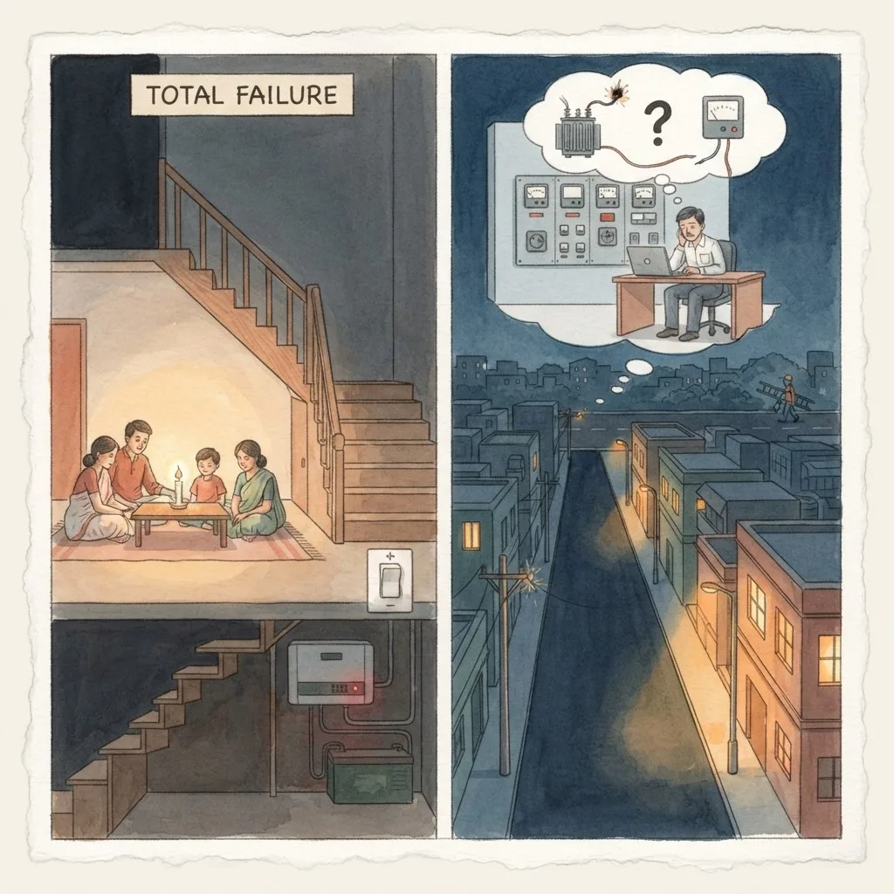
Your home inverter vs your city's power grid. At home, when the inverter fails, everything goes dark: clear and simple. In the city grid, one feeder line trips, your street is dark, the next street is lit, and the electricity board office can't tell from its desk whether your area's transformer is burnt or just the wire to their meter is cut. Where it breaks: the grid has physical meters you can walk up to and check; a remote server you only reach over the network you can't "walk up to".
One computer can be designed as "fail-stop": internal checks make it halt rather than misbehave. A network of computers has no single place that sees everything, so no component can decide "stop everything now". Each part keeps going with its own partial view; that is where non-determinism comes from.
There is a spectrum of ways to build large-scale computing systems:
They handle faults very differently. A supercomputer job typically checkpoints its state to durable storage from time to time. If one node fails, the usual answer is to stop the whole cluster workload, repair the node, and restart from the last checkpoint. So a supercomputer behaves more like one big single computer than a distributed system: it turns a partial failure into a total failure on purpose, like a kernel panic.
Supercomputers use specialized hardware: each node is quite reliable, and nodes talk via shared memory and RDMA (remote direct memory access). They use special network shapes (topologies) such as multi-dimensional meshes and toruses. That gives great performance and enough reliability for HPC.
This book is about internet services, which look very different:
To make distributed systems work we must accept partial failure and build fault tolerance into the software: build a reliable system from unreliable components. (As in Ch.1 "Reliability", perfect reliability doesn't exist, so we must understand the limits of what we can promise.)
Even small systems of a few nodes need this. Most parts work most of the time, but sooner or later something will be faulty and the software must handle it. Fault handling must be part of the design, and operators must know what the software will do when a fault happens. Don't assume faults are rare and hope for the best. Consider a wide range of faults, even unlikely ones, and create them artificially in testing to see what happens. In distributed systems, suspicion, pessimism and paranoia pay off.
| Supercomputer (HPC) | Internet service (cloud) | |
|---|---|---|
| Typical job | weather, molecular dynamics (batch) | serving users (online, 24×7) |
| Hardware | specialized, reliable nodes | commodity, cheaper, fail more |
| Network | shared memory, RDMA, mesh/torus | IP/Ethernet, Clos topology, internet between regions |
| On a node failure | stop all, repair, restart from checkpoint | keep serving; route around; replace node |
| Behaves like | one big computer (partial → total failure) | a true distributed system (tolerate partial failure) |
If each node is independently broken with probability p at any moment, the chance that at least one of N nodes is broken is 1 − (1 − p)N. The values are illustrations, not the book's numbers.
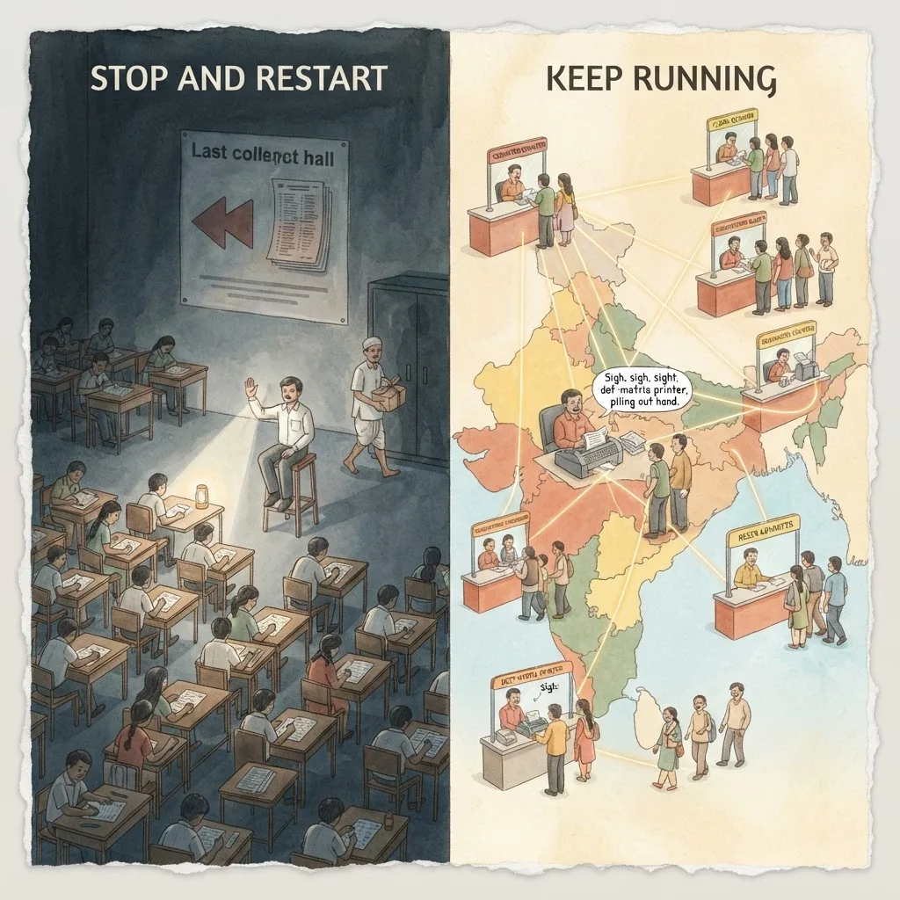
A supercomputer is like a board exam hall: if the power goes, the whole exam is stopped and restarted later from the last saved answer sheet. An internet service is like the Indian Railways reservation system: some counter's printer is always jammed somewhere in India, but the system as a whole never stops selling tickets. Where it breaks: railway counters are run by people who can phone each other and agree; servers only have unreliable messages.
The probability that "at least one part is broken" grows fast with the number of parts. So "stop the world on any failure" works only when parts are few and very reliable. At internet scale, the software itself must treat failure as normal.
It seems a system can only be as reliable as its least reliable part (its weakest link). That's not true. Building a more reliable system on top of a less reliable base is an old idea in computing (von Neumann, 1956). Examples:
But there is always a limit. Error-correcting codes can fix a small number of single-bit errors, but if the signal is drowned in interference, there's a fundamental limit to how much data you can get through (Shannon, 1948). TCP can hide loss, duplication and reordering, but it cannot magically remove network delays.
The higher-level system isn't perfect, but it's still very useful: it handles the tricky low-level faults, so the remaining faults are easier to reason about.
Watch one 400-byte message sent as 4 packets over an IP network that loses one, duplicates one and delivers out of order. Packet sizes and the 200 ms timer are modelled.
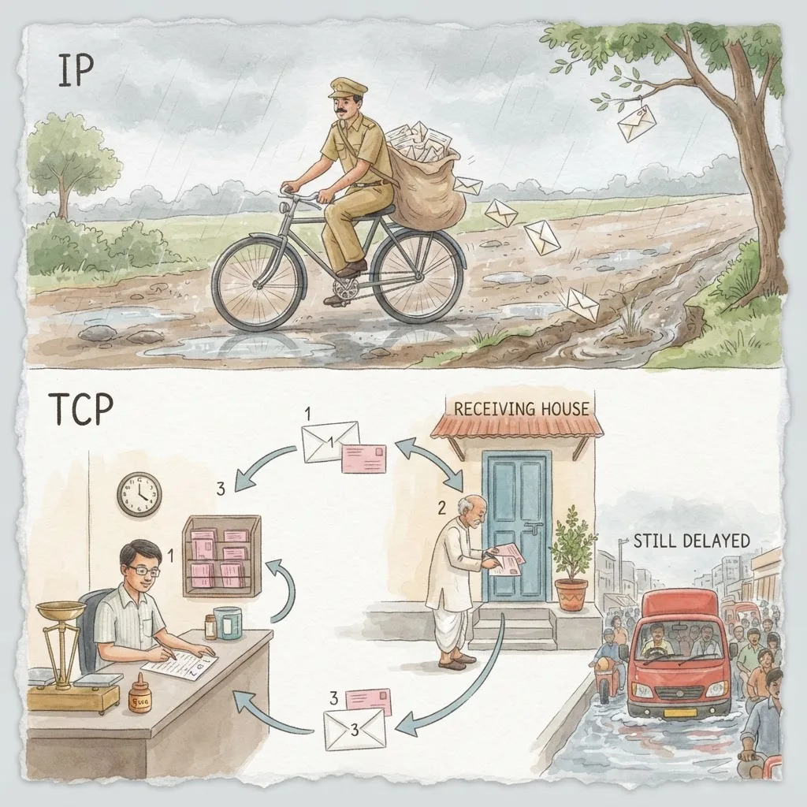
India Post with registered post and a tracking number. Ordinary post (IP) sometimes loses or delays letters. Registered post (TCP) keeps asking for acknowledgement and re-sends if none comes, so you eventually get every letter, in order. Where it breaks: registered post can't make a letter arrive faster when the mail van is stuck; the delay is still there.
Redundancy (extra check bits, sequence numbers, acknowledgements, retries) converts some kinds of fault into delay or into a clean error. That's the general trick of the whole field: we can't remove faults, but we can turn messy faults into simpler, well-defined ones.
The book focuses on shared-nothing systems: machines joined by a network. The network is the only way they communicate. Each machine has its own memory and disk; one machine can't read another's memory or disk except by asking a service over the network.
The internet and most datacenter networks (often Ethernet) are asynchronous packet networks: a node can send a message (a packet) to another, but the network gives no guarantee when it arrives, or whether it arrives at all. If you send a request and wait for a response, many things can go wrong:
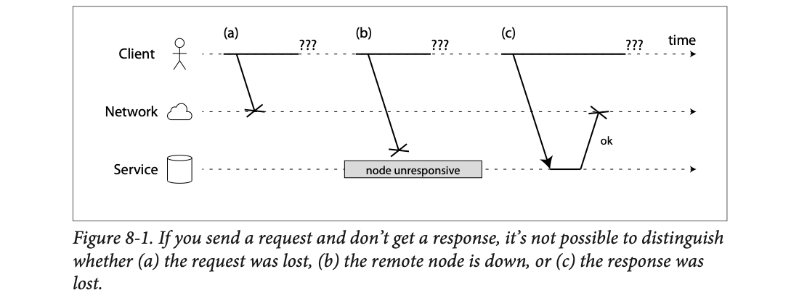
Three horizontal lines: Client (top), Network (middle), Service (bottom); time flows left to right. A slanted arrow is a message travelling. An "X" on an arrow means the message was lost there. In (a) the request dies in the network. In (b) the request reaches the service, but the service is in a grey "node unresponsive" box, so nothing comes back. In (c) the service did the work and sent "ok", but the "ok" dies in the network. The key: the client's line looks identical in all three, a solid line followed by "???". The client gets no information about which case happened.
The sender can't even tell whether the packet was delivered. The only way to know is for the recipient to send a response, which may itself be lost or delayed. All six cases above are indistinguishable in an asynchronous network: the only fact you have is "no response yet".
The usual answer is a timeout: after some time, give up waiting and assume the response won't come. But even then you still don't know whether the remote node got your request. If the request is still queued somewhere, it may still be delivered, even though the sender has given up.
Press "Send request". The page secretly picks one of the 6 cases. You see only what a real client sees. Then guess, and reveal.
Why "no reply" is dangerous: the client can't tell case 5 (work done, reply lost) from case 1 (request lost). Amounts, order ID and times are made up.
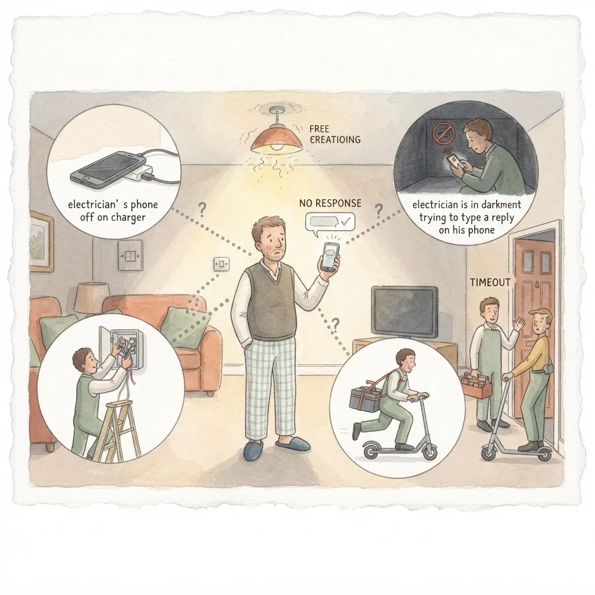
You send a WhatsApp message to the electrician: "Can you come at 5?" One grey tick, then nothing. Was it never delivered (his phone is off)? Did he read it and his reply fail to send from a basement? Is he busy on a ladder and will answer later? Did he already leave for your house? From your phone, all of these look exactly the same. After 30 minutes you "time out" and call someone else, and maybe both electricians show up. Where it breaks: WhatsApp gives you blue ticks; plain networks give you no "read receipt" unless the other side's application sends one.
Knowledge about the other side travels only inside messages. Silence carries zero bits of information, so it can't distinguish six different realities. And because case 2 exists (the request is just queued), a timeout doesn't even mean "it didn't happen"; it might happen later. That is why retries must be safe to repeat (idempotent) or carry a unique ID for de-duplication.
We have built computer networks for decades, yet they still aren't reliable. Systematic studies and lots of stories show network problems are surprisingly common, even inside one company's datacenter:
When one part of the network is cut off from the rest, that's sometimes called a network partition or netsplit. The book says network fault instead, to avoid confusion with partitions (shards) of a storage system from Chapter 6.
Even if faults are rare in your environment, the fact that they can happen means your software must handle them. Any communication over a network may fail; there's no way around it.
If error handling for network faults isn't defined and tested, arbitrarily bad things can happen: the cluster could deadlock and stay unable to serve requests even after the network recovers (seen in Elasticsearch), or it could even delete all your data (Redis Sentinel discussion). Software in an unexpected situation may do anything.
Handling network faults doesn't necessarily mean tolerating them. If your network is usually reliable, it can be fine to just show users an error message during problems. But you must know how your software reacts and make sure it recovers. It can make sense to trigger network problems on purpose and test the response (Chaos Monkey, Ch.1).
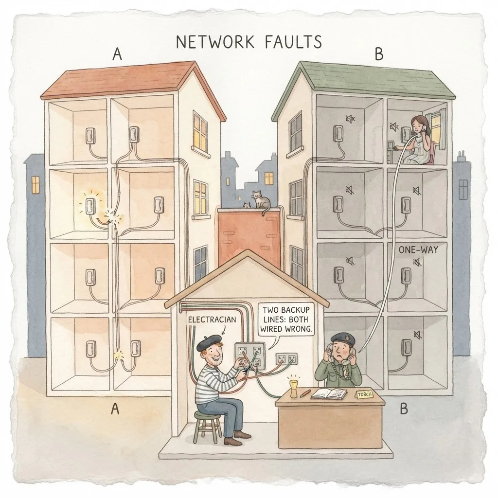
A society's intercom system. Some months the wire to one flat breaks; other months the whole B-wing goes silent. Adding a second intercom line doesn't help when the electrician wires both of them wrong (human error). And sometimes your intercom can call the gate but can't hear the guard reply. Where it breaks: you'd notice a dead intercom quickly; a server may not realize its inbound path is dead.
Redundancy protects against independent hardware faults. Human error and software bugs are correlated: the same wrong config is pushed to both "redundant" switches. That's why the studies found redundancy helps less than expected, and why the book insists on testing fault handling instead of trusting hardware.
Many systems need to detect faulty nodes automatically, for example:
Because of network uncertainty, it's hard to tell if a node is working. In some cases you do get explicit feedback:
Fast feedback that a node is down is useful, but you can't count on it. Even if TCP acknowledges a packet was delivered, the application may have crashed before handling it. To be sure a request succeeded, you need a positive response from the application itself (the "end-to-end argument", ref [23]).
The other way round: when something goes wrong you may get an error at some layer, but generally assume you get no response at all. You can retry a few times (TCP retries transparently; you can also retry at application level), wait for a timeout, and finally declare the node dead if nothing comes back.
One UPDATE to a database machine called db-2, and the different kinds of feedback (or silence) the client may get. Port 5432 is PostgreSQL's usual port; times are modelled.
Sending a courier to an office. The courier company's "delivered" SMS (TCP ACK) only means the packet reached the reception desk. Whether the manager actually read and signed the document (application processed it) you only know when the manager replies. If the receptionist says "this office has shut down" (RST), that's a helpful quick answer, but usually you just hear nothing. Where it breaks: a receptionist can tell you "he's on leave"; networks rarely give such reasons.
Each layer of the stack can only vouch for itself. Positive feedback from lower layers is incomplete, and negative feedback is optional. Only end-to-end confirmation from the application is trustworthy, and in its absence everything falls back to retry + timeout.
If a timeout is the only sure way to detect a fault, how long should it be? There's no simple answer.
A long wait before a node is declared dead. Meanwhile users wait or see errors.
Detects faults faster, but higher risk of wrongly declaring a node dead when it only had a temporary slowdown (load spike on the node or network).
Declaring a node dead too early is harmful: its responsibilities move to other nodes, which adds load to them and to the network. If the system is already struggling with high load, false "deaths" can make it worse and even cause a cascading failure (in the extreme, all nodes declare each other dead and everything stops). (Beyond the book: also, if the node was actually alive and in the middle of an action, the action might end up done twice when another node takes over.)
A thought experiment: imagine a network with a guaranteed maximum delay d: every packet is delivered within d or lost, never later. And a non-failed node always handles a request within time r. Then every successful request gets a response within 2d + r (request trip + processing + response trip), and if no response comes within that time, you know the network or node is broken. 2d + r would be a perfect timeout.
Sadly, real systems have neither guarantee. Asynchronous networks have unbounded delays: they try to deliver packets quickly, but there is no upper limit on how long one may take. Most servers can't guarantee a maximum handling time either (plate 21). For failure detection, being fast most of the time isn't enough: with a low timeout, one transient spike in round-trip times can throw the system off balance.
200 simulated round-trip times from a healthy node: mostly ~20–60 ms with a long tail of spikes (made-up distribution). Every bar to the right of your timeout would be wrongly declared dead. The "detect a real crash" time equals your timeout.
Suppose a magic network guaranteed d = 5 ms and servers guaranteed r = 20 ms. Then 2d + r = 2×5 + 20 = 30 ms. Any reply would arrive by 30 ms; silence at 31 ms would prove a fault. In the real world a GC pause or a queue makes some replies take 300 ms or 30 s, so a 30 ms timeout would declare healthy nodes dead all day.
The book warns that declaring nodes dead too early adds load and can cascade. Here is one way it plays out. All numbers modelled.
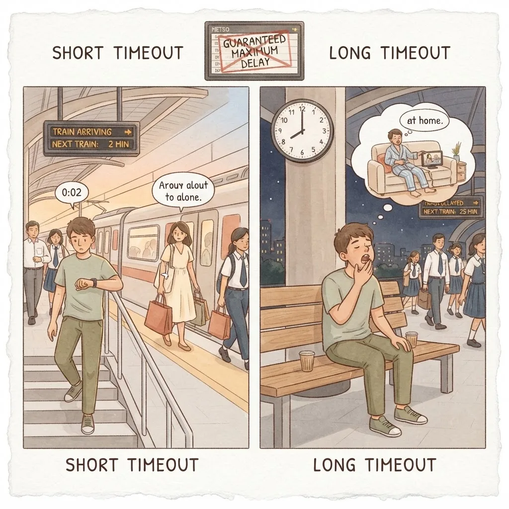
Waiting for a friend at the metro station. If you leave after 2 minutes (short timeout), you'll often abandon friends whose train was a bit late, and then they have to travel alone (extra load). If you wait 2 hours (long timeout), you waste your evening when they've actually cancelled. If trains had a guaranteed maximum delay, you'd know exactly when to stop waiting. Where it breaks: your friend can phone you; a paused server can't tell anyone it is paused.
A timeout is a bet on the tail of the latency distribution. If the tail has no upper bound, every timeout value has some chance of a false positive. The cost of false positives (failover churn, extra load, duplicated work) has to be weighed against the cost of slow detection.
When driving, travel time varies mostly because of traffic jams. Likewise, the variability of packet delays is mostly due to queueing. Five places where packets wait:
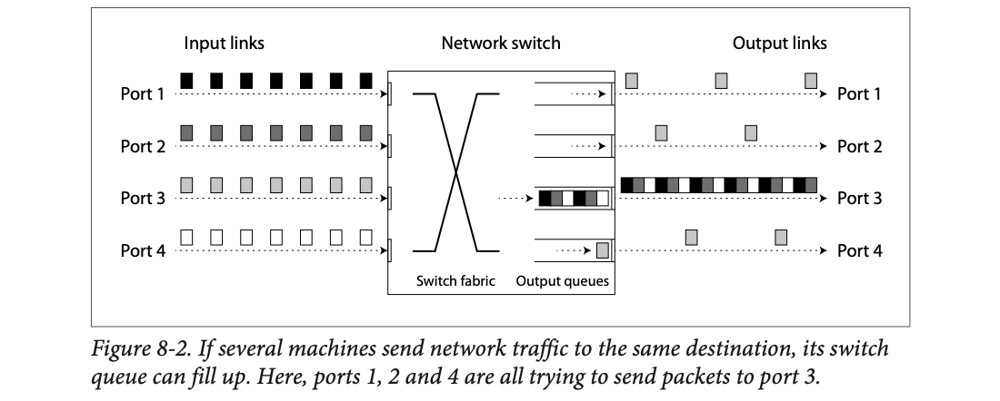
Left: four input links (ports 1–4), each a steady stream of packets (black, dark grey, light grey, white). Middle: the switch fabric crosses them over to the output queues. Right: four output links. Ports 1, 2 and 4 all want to go to output port 3, so port 3's output queue is packed with black, dark-grey and white packets interleaved, and its outgoing link is solid. The other outputs are nearly idle. Port 3's link can only send one packet at a time, so the others wait in its queue; when that queue is full, extra packets are dropped. The network is not "broken", it's just busy at one spot.
Each tick, every active sender adds 1 packet to port 3's queue and port 3 sends out 1 packet. Queue capacity is 12 (invented). Squares: black = from port 1, grey = port 2, outlined = port 4, red = dropped this tick.
Some latency-sensitive applications, like video conferencing and VoIP (voice over IP), use UDP (User Datagram Protocol) instead of TCP. It's a trade-off between reliability and variability of delays: UDP does no flow control and no retransmission, so it avoids some causes of variable delay (though it still suffers from switch queues and scheduling delays).
UDP is good when delayed data is worthless. In a VoIP call, there probably isn't time to re-send a lost packet before its audio is due to play. So the app fills the missing slot with silence (a brief glitch in the sound) and moves on.
All these factors add up to variable delays. Queueing delays vary most when a system is near maximum capacity: a system with spare capacity drains queues easily, but in a highly utilized system long queues build up very quickly.
In public clouds and multitenant datacenters, resources are shared among many customers: network links, switches, even each machine's network interface and CPUs (with VMs). Batch workloads such as MapReduce (Ch.10) can easily saturate network links. You have no control or insight into other customers' usage, so delays can vary a lot if someone near you, a noisy neighbor, uses a lot of resources.
In such environments you can only choose timeouts experimentally: measure the distribution of round-trip times over a long period and many machines, find the expected variability, then, considering your application, pick a trade-off between failure-detection delay and risk of premature timeouts.
Even better: instead of fixed timeouts, systems can continually measure response times and their variability (jitter) and adjust timeouts automatically. That's what a Phi Accrual failure detector does; it's used in Akka and Cassandra. TCP retransmission timeouts work in a similar way.
Instead of a yes/no "dead after X ms", the detector keeps a moving window of recent heartbeat gaps, models their distribution (mean and spread), and outputs a suspicion level φ (phi): how unlikely the current silence is given past behaviour. φ = 1 means "about 10% chance this is normal", φ = 2 "about 1%", φ = 3 "about 0.1%". The system declares the node dead when φ passes a threshold (Cassandra's default is 8). On a jittery network the gaps spread out, so the same silence produces a lower φ, and the timeout effectively stretches by itself. (Mechanism and defaults from the φ-accrual paper and Cassandra docs, not from DDIA.)
One packet from sender to receiving app, passing through all five places the book says packets wait. The causes are the book's; the milliseconds are modelled.
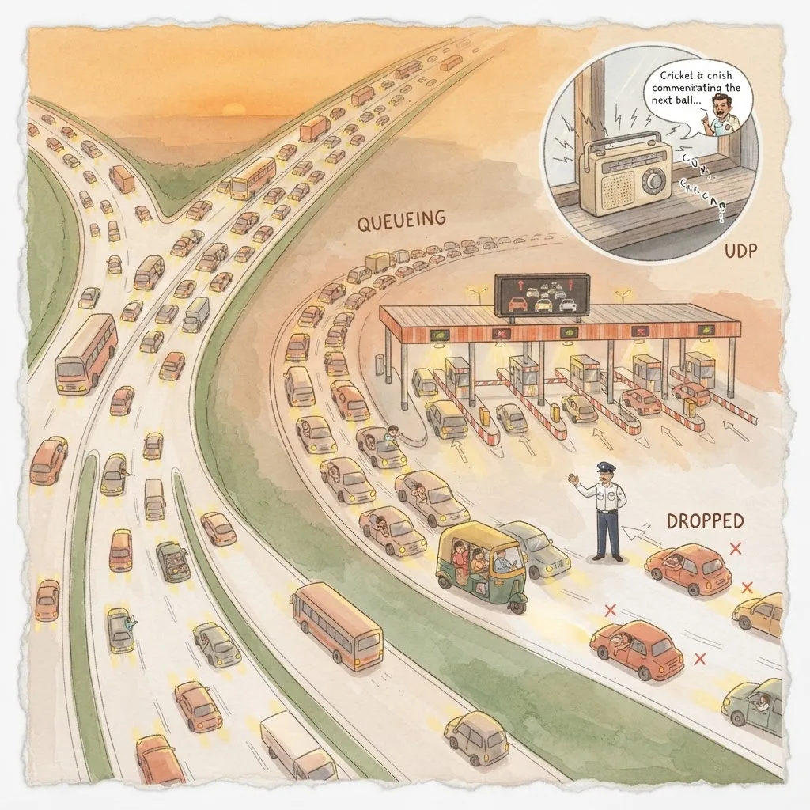
The toll plaza on a highway. Most of the day you cross in 30 seconds. When three highways merge into one plaza at 6 pm (ports 1, 2, 4 → port 3), the queue gets long; when it backs up past the exit, police turn cars away (dropped packets) even though every road is "working". A VoIP call is like a live cricket commentary on radio: if a few words are lost in static, the commentator doesn't repeat them, the match has moved on (UDP). Where it breaks: a turned-away car can't be magically "re-sent"; TCP can, but you pay with waiting time.
Distributed systems would be much simpler if the network delivered packets with a fixed maximum delay and never dropped them. Why not fix this in hardware?
Compare with the traditional fixed-line telephone network (not mobile, not VoIP). It is extremely reliable: delayed audio frames and dropped calls are very rare. A voice call needs constantly low end-to-end latency and enough bandwidth for the audio samples.
When you make a phone call, the network sets up a circuit: a fixed, guaranteed amount of bandwidth along the whole route between the two callers, which stays reserved until the call ends. Example: an ISDN (Integrated Services Digital Network) line runs at a fixed 4,000 frames per second. A call is given 16 bits in each frame, in each direction. So for the whole call, each side can send exactly 16 bits of audio every 250 microseconds (1 s ÷ 4,000 = 250 µs).
Such a network is synchronous: data passes through several routers without queueing, because its 16 bits of space are already reserved in the next hop. No queueing → the maximum end-to-end latency is fixed. This is called a bounded delay.
Each box is one frame (every 250 µs). The highlighted 16-bit slot belongs to your call in every frame, whether you speak or not. Book's numbers: 4,000 frames/s, 16 bits per call per direction.
16 bits × 4,000 frames/s = 64,000 bits/s = 64 kbit/s per direction for one call. That bandwidth is yours for the whole call, even during silence, and nobody else can use it. In return, every 16-bit chunk crosses each hop in its reserved slot, so delay is fixed and predictable.
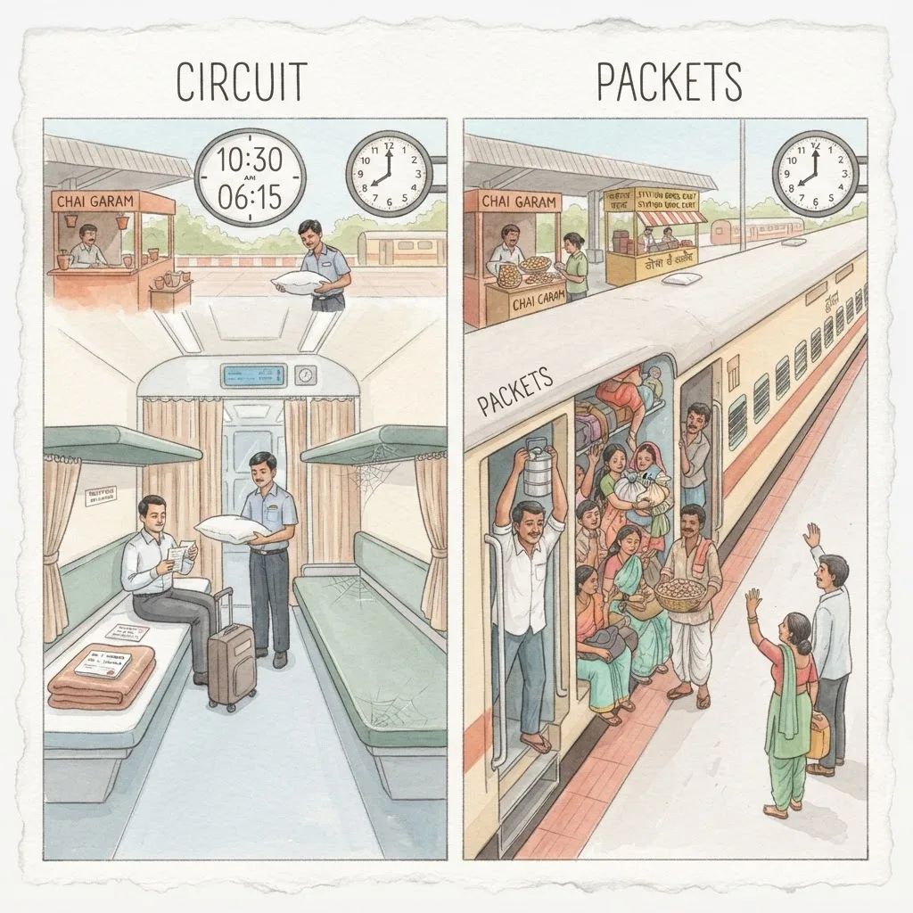
A reserved seat on a Rajdhani Express vs the general compartment. Your reserved seat (circuit) is guaranteed: you'll get on and you know exactly when you arrive. Even if you don't show up, the seat stays empty for you. The general compartment (packet network) fits as many as can squeeze in: cheaper and fuller, but some days you wait for the next train. Where it breaks: trains run on a timetable; packet networks have no timetable at all.
Delay in networks comes from waiting for a free slot on the next link. A circuit removes the waiting by booking the slot in advance on every hop. Bounded delay is bought with reserved capacity.
A telephone circuit is very different from a TCP connection. A circuit is a fixed amount of reserved bandwidth nobody else can use while it exists. TCP packets opportunistically use whatever bandwidth is available. You give TCP a variable-sized block of data (e.g. a web page) and it transfers it as fast as possible. An idle TCP connection uses no bandwidth (footnote ii: except maybe an occasional keepalive packet if TCP keepalive is on).
If datacenter networks and the internet were circuit-switched, a guaranteed maximum round-trip time could be set up with the circuit. But they're not: Ethernet and IP are packet-switched, so they suffer from queueing and therefore unbounded delays.
Why packet switching? Because it's optimized for bursty traffic. A circuit suits an audio/video call that needs a roughly constant bit rate for its whole duration. But loading a web page, sending an email or transferring a file has no particular bandwidth requirement: we just want it done as fast as possible.
To send a file over a circuit, you'd have to guess a bandwidth. Too low → the transfer is needlessly slow and capacity sits unused. Too high → the circuit can't be set up (the network refuses circuits it can't guarantee). So circuits waste capacity and slow bursty transfers. TCP instead adapts its rate to the available capacity.
Link capacity 1,000 Mbit/s, of which other traffic currently uses some share (invented numbers). With a circuit you must book a fixed rate up front; with TCP you just use what's free.
There have been hybrid attempts that support both circuit and packet switching, such as ATM. (Footnote iii: Asynchronous Transfer Mode was an Ethernet competitor in the 1980s but saw little adoption outside telephone network core switches. It has nothing to do with cash machines. Kleppmann jokes that in a parallel universe where the internet runs on something like ATM, internet video calls are probably much more reliable.) InfiniBand (a fast network used in supercomputers and some datacenters) has some similarities: it does end-to-end flow control at the link layer, reducing queueing in the network, though it can still be delayed by link congestion. With careful QoS (quality of service: prioritizing and scheduling packets) and admission control (rate-limiting senders), you can emulate circuit switching on packet networks or give a statistically bounded delay.
But such QoS is not enabled in multitenant datacenters and public clouds, or across the internet. (Footnote iv: peering agreements between internet providers and routes set up through BGP (Border Gateway Protocol) resemble circuit switching more than IP does. At that level you can buy dedicated bandwidth. But internet routing works at the level of whole networks, not individual connections between hosts, and on much longer timescales.)
So today's technology gives no guarantees about delay or reliability: we must assume congestion, queueing and unbounded delays will happen. Therefore there's no "correct" timeout value; it must be found experimentally.
Link: 1,000 Mbit/s. Other traffic uses 40%, so 600 Mbit/s is free. File: 100 MB = 800 megabits.
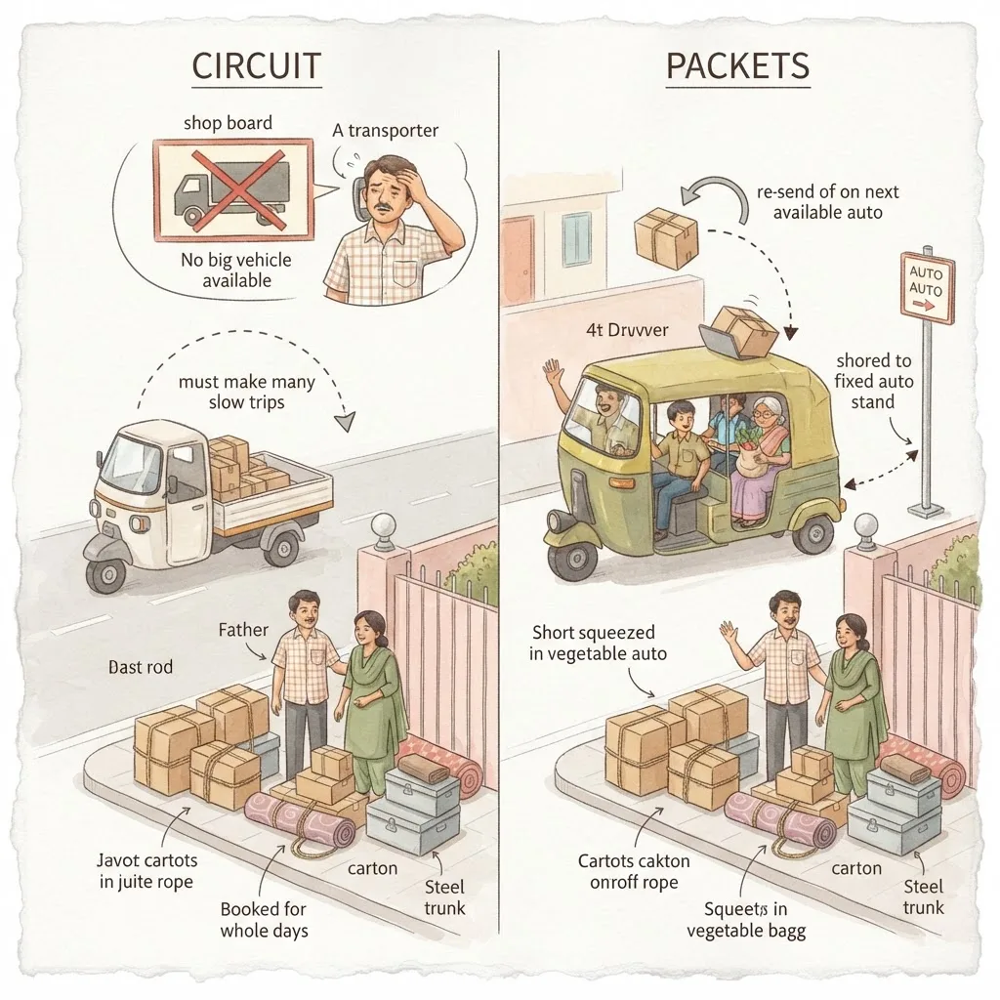
Booking a whole tempo (circuit) vs using a shared auto (packets) to move boxes. Book a tempo too small, and your stuff moves in many slow trips while half the road is empty; book a big one and the transporter says "none available". A shared auto just takes whatever fits right now. Where it breaks: shared autos stop at fixed stands; packets can be dropped mid-way and re-sent.
Circuits trade flexibility for predictability; packets trade predictability for efficiency. Internet traffic is mostly bursty (pages, files, API calls), so packet switching wins on cost and speed, and delay variance is the side effect we live with.
More generally, variable delays come from dynamic resource partitioning.
Say a wire between two telephone switches can carry up to 10,000 simultaneous calls. Each circuit uses one call slot, so the wire is a resource shared by up to 10,000 users. It's divided statically: even if you're the only call and 9,999 slots are empty, your circuit still gets the same fixed bandwidth as when the wire is full.
The internet shares bandwidth dynamically. Senders push and jostle to get packets over the wire as fast as possible, and switches decide which packet goes next, moment by moment. Downside: queueing. Upside: maximum utilization of the wire. The wire has a fixed cost, so better utilization means each byte is cheaper.
CPUs are the same: if each core is shared dynamically between threads, a thread sometimes waits in the OS run queue while another runs, so it can be paused for varying lengths of time. But this uses hardware better than giving each thread a fixed number of CPU cycles. Better utilization is also a big reason for virtual machines.
Latency guarantees are achievable if resources are statically partitioned (dedicated hardware, exclusive bandwidth), but at the cost of lower utilization, i.e. more expensive. Multitenancy with dynamic partitioning gives better utilization, so it's cheaper, but delays vary.
Variable delays in networks are not a law of nature, just the result of a cost/benefit trade-off.
The 10,000 slots are from the book. The bandwidth-per-active-user numbers are a simplified model: with static slots each user always gets 1 slot; with dynamic sharing the free capacity is spread among active users (but they queue at peaks).
How waiting time grows as a shared link or CPU gets busier. A rough rule from queueing theory (beyond the book), not measured data.
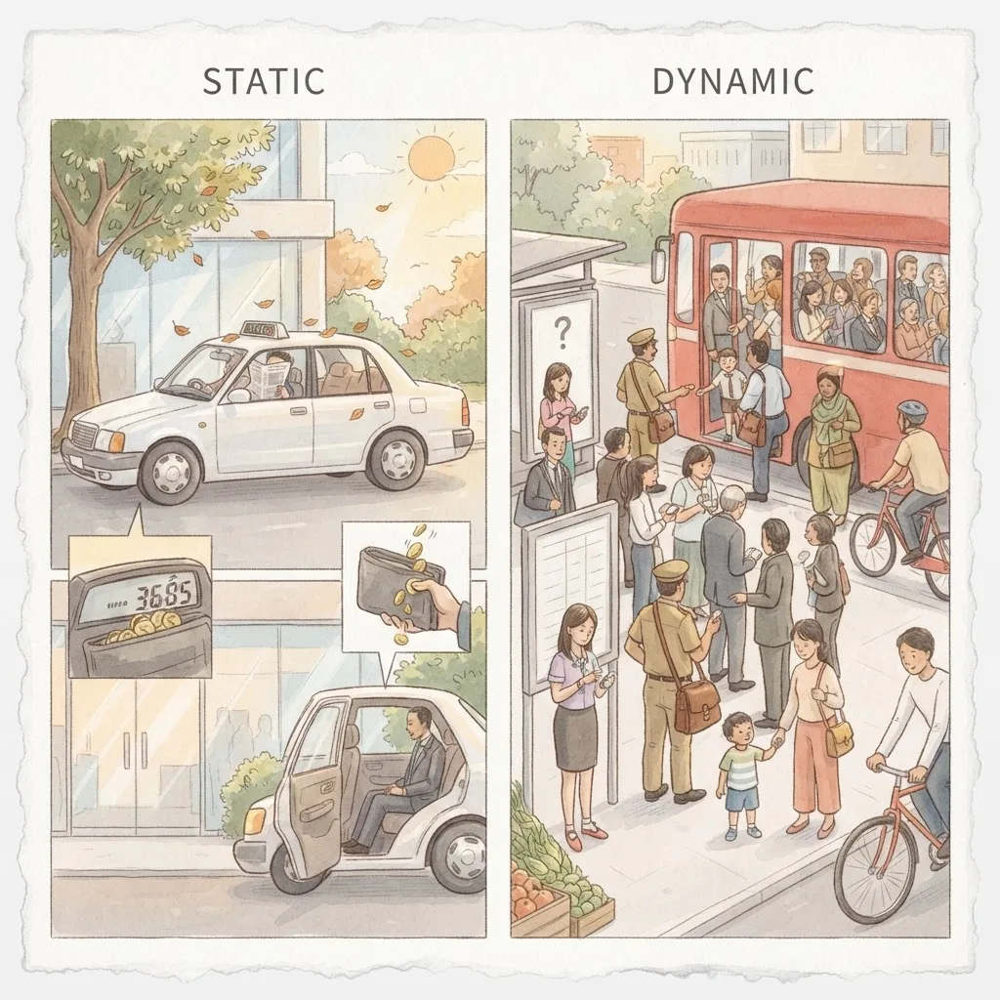
A private cab you pay for by the day vs a city bus. The cab (static) waits for you all day: zero waiting, very expensive, and idle most of the time. The bus (dynamic) is cheap because everyone shares it, but you wait at the stop and it can be crowded at rush hour. Cloud datacenters are buses. Where it breaks: a bus has a timetable; network capacity has none.
Queueing theory: as utilization approaches 100%, average waiting time grows sharply (roughly like 1/(1 − utilization)). Running hardware "hot" saves money and costs predictability. Each business picks a point on that curve.
Applications use clocks in many ways:
In a distributed system time is tricky, because communication isn't instant. A message is always received later than it's sent, but because network delays vary, we don't know how much later. That makes it hard to know the order in which things happened across machines.
Also, each machine has its own clock, a real hardware device, usually a quartz crystal oscillator. These aren't perfectly accurate, so each machine's time is slightly faster or slower than others'. Clocks can be synchronized to some degree, most commonly with NTP (Network Time Protocol), which adjusts a computer's clock using the time reported by a group of servers. Those servers get their time from a more accurate source such as a GPS receiver.
Two machines, one message, two slightly different clocks. Skew and delay values are modelled.
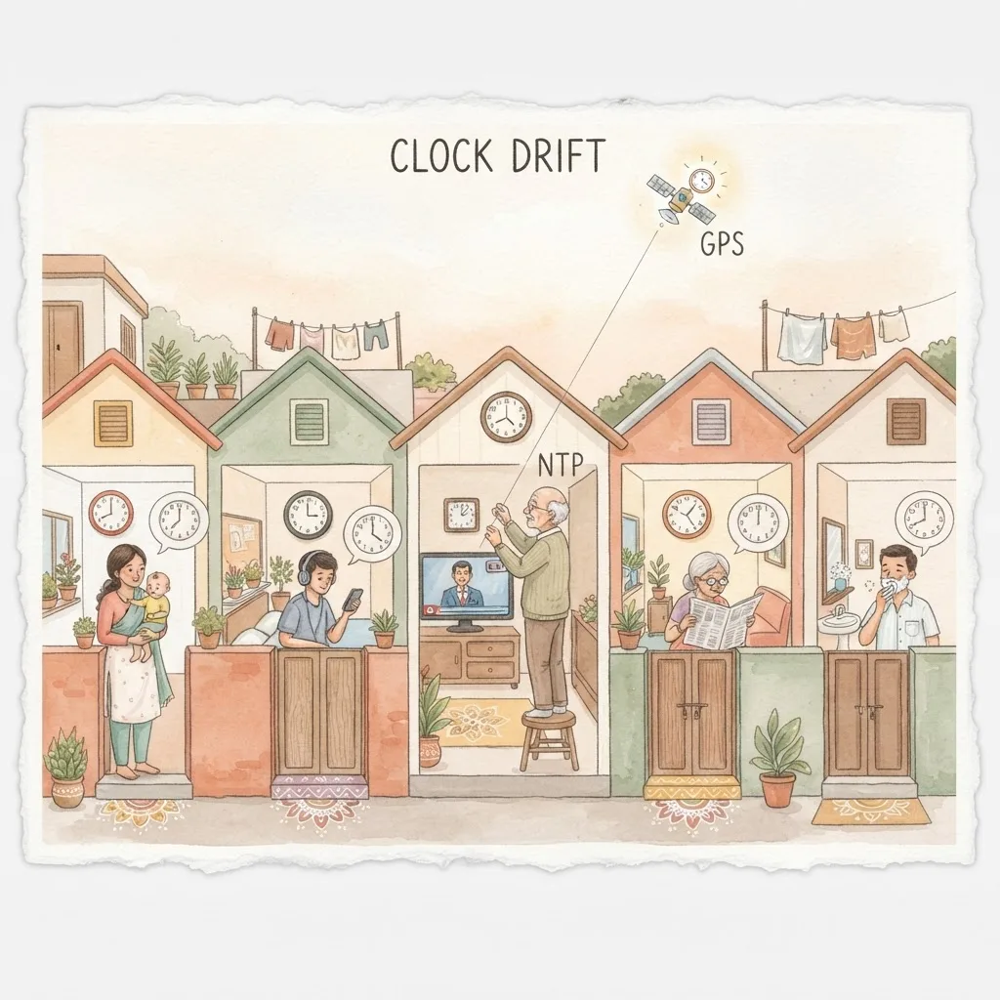
Every house in your colony has a wall clock. Each runs a little fast or slow. Once in a while people correct theirs from the TV news time (NTP), and the TV channel gets its time from a very precise source (GPS). Ask five neighbours "what time is it?" and you'll get five slightly different answers. Where it breaks: a neighbour can glance at the TV instantly; a server's "glance" travels over a delayed network.
Two separate problems: (1) message delay means you can't tell exactly when a remote event happened; (2) clock drift means local timestamps on different machines aren't comparable. Both get worse with distance and load.
Modern computers have at least two kinds of clock: a time-of-day clock and a monotonic clock. Both measure time, but they serve different purposes.
Returns the current date and time according to a calendar (also called wall-clock time). Examples: clock_gettime(CLOCK_REALTIME) on Linux and System.currentTimeMillis() in Java return the seconds (or milliseconds) since the epoch: midnight UTC (Coordinated Universal Time, the world's reference clock) on 1 January 1970 (Gregorian calendar), not counting leap seconds. Some systems use other reference dates. (Footnote v: although it's called "real-time", it has nothing to do with real-time operating systems, plate 21.)
Time-of-day clocks are usually synced with NTP, so a timestamp from one machine (ideally) means the same as on another. But they have oddities: if the local clock is too far ahead of the NTP server, it may be forcibly reset and appear to jump back in time. These jumps, and the fact that they often ignore leap seconds, make time-of-day clocks unsuitable for measuring elapsed time. Historically they also had coarse resolution, e.g. moving in 10 ms steps on older Windows; less of a problem on recent systems.
Suitable for measuring a duration, such as a timeout or response time. Examples: clock_gettime(CLOCK_MONOTONIC) on Linux, System.nanoTime() in Java. The name means they're guaranteed to always move forward.
Read it once, do something, read it again: the difference tells you elapsed time. But the absolute value is meaningless: it might be nanoseconds since boot, or something arbitrary. It makes no sense to compare monotonic values from two different computers.
On a server with multiple CPU sockets, there may be a separate timer per CPU, not necessarily synced. The OS tries to present a monotonic view to threads even as they move between CPUs, but take this guarantee with a pinch of salt.
NTP may adjust how fast the monotonic clock moves (slewing) if the local quartz runs fast or slow. By default NTP can speed up or slow down the clock rate by up to 0.05%, but it cannot make the monotonic clock jump forward or back. Monotonic clocks usually have good resolution: microseconds or better.
In a distributed system, using a monotonic clock for elapsed time (e.g. timeouts) is usually fine: it needs no synchronization between nodes and isn't sensitive to slight inaccuracies.
| Time-of-day (wall clock) | Monotonic | |
|---|---|---|
| Answers | "What date/time is it?" | "How much time passed?" |
| Linux / Java | CLOCK_REALTIME / currentTimeMillis() | CLOCK_MONOTONIC / nanoTime() |
| Can jump back? | Yes (NTP reset); ignores leap seconds | No; NTP can only slew rate by ≤0.05% |
| Compare across machines? | Roughly (if NTP is working) | Never (value is arbitrary) |
| Use for | timestamps, schedules, logs | timeouts, latency measurement |
// Wrong: elapsed time from the wall clock (can be negative or huge)
long start = System.currentTimeMillis();
doWork();
long elapsed = System.currentTimeMillis() - start;
// Right: elapsed time from the monotonic clock
long t0 = System.nanoTime();
doWork();
long elapsedNs = System.nanoTime() - t0;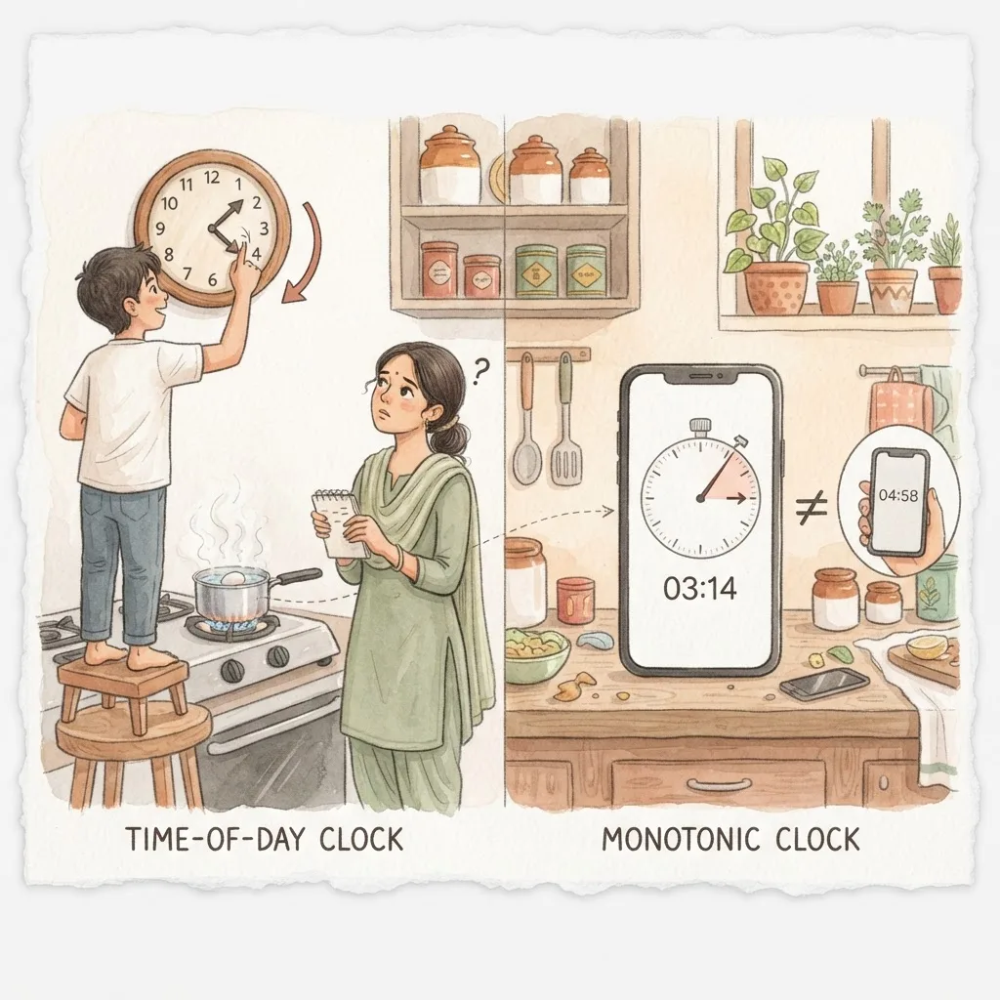
The wall clock in your kitchen vs the stopwatch on your phone. If someone adjusts the kitchen clock back by 5 minutes while you're boiling an egg, "end time minus start time" says your egg boiled for −2 minutes. The stopwatch doesn't care what anyone does to the kitchen clock; it just counts up. But you can't ask the stopwatch "what's the date?", and your stopwatch's "02:13" means nothing on your friend's phone. Where it breaks: NTP can still make the stopwatch tick slightly faster or slower (slewing), which a real stopwatch never does.
The wall clock is a shared label that has to be corrected to agree with the world, so corrections can move it backwards. The monotonic clock is a private counter that is never corrected by jumping, so differences of its values are always non-negative.
Monotonic clocks need no sync, but time-of-day clocks must be set from NTP or another source to be useful. That's far less reliable than you'd hope. Examples:
Very good accuracy is possible if you invest enough. The MiFID II draft European regulation requires high-frequency trading funds to sync clocks within 100 microseconds of UTC, to help debug "flash crashes" and detect market manipulation. That needs GPS receivers, the PTP (Precision Time Protocol), and careful deployment and monitoring: lots of effort and expertise. If the NTP daemon is misconfigured or a firewall blocks NTP, drift error grows quickly.
Worst-case error just before the next sync = drift rate × time since last sync. Defaults reproduce the book: 200 ppm × 30 s = 6 ms; 200 ppm × 86,400 s ≈ 17 s.
Bar scale: full width = 1 second of error.
200 ppm = 200 / 1,000,000 = 0.0002 seconds of error per second. 30 s × 0.0002 = 0.006 s = 6 ms. One day = 86,400 s × 0.0002 = 17.28 s ≈ 17 s. A leap-second smear spreads 1 s over 24 h ≈ 11.6 µs of "lie" per second (that last figure is modelled, from 1 s ÷ 86,400 s).
Your server asks an NTP server for the time. Watch how the four timestamps give an estimate, and why a slow return path leaves an error. Values modelled; the formula is standard NTP (beyond the book).
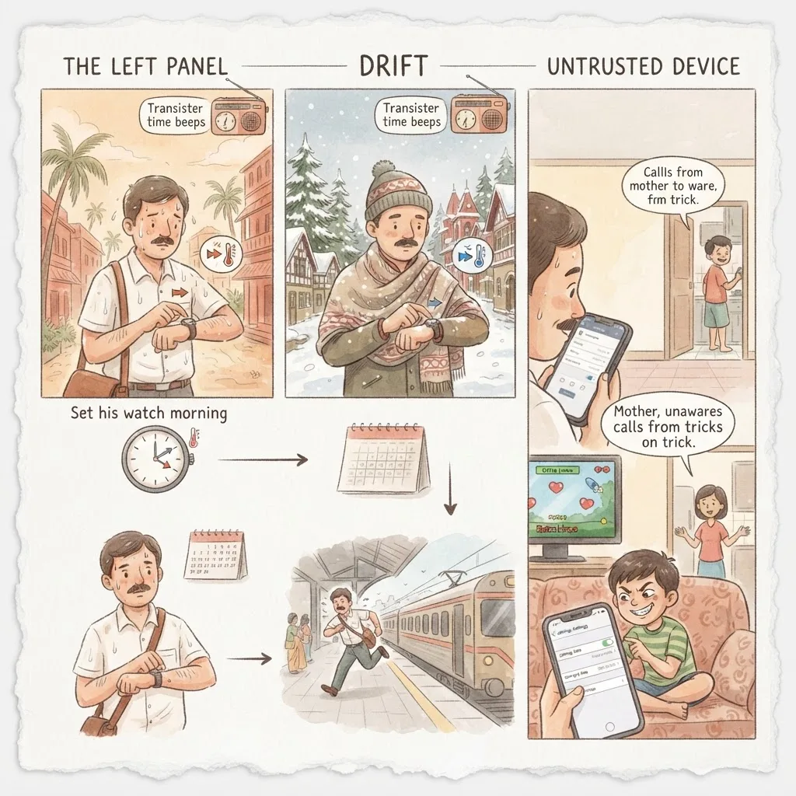
Your old wind-up wristwatch gains a few seconds a day, more in the Chennai summer than in a Shimla winter (temperature). If you set it every morning from the radio, it's off by a few seconds at most. Forget for a month and you miss your train. Kids changing the phone date to get extra lives in a game is the "devices you don't control" problem. Where it breaks: the radio signal reaches you almost instantly; NTP's answer arrives with a variable network delay that itself blurs the correction.
Clock error = drift since last sync + error of the sync itself. The sync error is bounded below by network delay uncertainty (you don't know whether the reply took 1 ms or 30 ms on its way back). That's why precise sync needs local GPS/atomic references or PTP with hardware timestamping.
Clocks look simple but have many pitfalls: a day may not have exactly 86,400 seconds, time-of-day clocks may move backwards, and one node's time may be quite different from another's.
Just as software must assume the network will occasionally be faulty and handle it gracefully, robust software must be prepared for incorrect clocks, even though clocks work well most of the time.
Part of the problem: incorrect clocks easily go unnoticed. A defective CPU or misconfigured network usually stops the machine working, so it's noticed and fixed quickly. But a defective quartz clock or misconfigured NTP client leaves most things working fine while the clock drifts further and further from reality. If software relies on accurate clocks, the result is more likely silent and subtle data loss than a dramatic crash.
So if you use software that needs synchronized clocks, you must monitor clock offsets between all machines. Any node whose clock drifts too far should be declared dead and removed from the cluster, so broken clocks are caught before they cause too much damage.
A monitor watches clock offsets on 5 nodes. One node is cut off from NTP and drifts at the book's 200 ppm. The ±100 ms band is modelled.
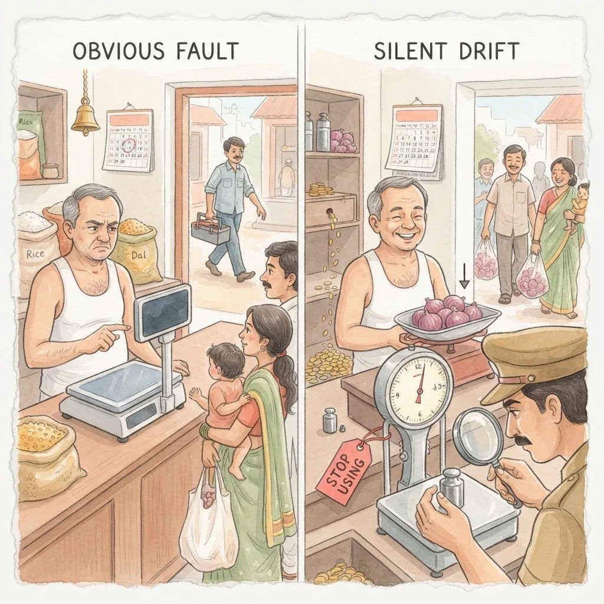
A slightly wrong weighing scale at a kirana shop. A broken scale that shows nothing gets fixed today. A scale that reads 5% light keeps "working" for months while the shop silently loses money on every kilo. The only defence is to check it regularly against a known weight, and stop using it if it's off. Where it breaks: a shopkeeper can re-calibrate the scale by hand; a node whose clock is far off is often simply removed.
Failures that crash are self-announcing. Failures that only shift values (clock offset, slightly wrong data) are silent, so they need active monitoring with thresholds, otherwise they corrupt data quietly.
It's tempting but dangerous to use clocks to order events across nodes. If two clients write to a distributed database, who got there first? Which write is newer?
Figure 8-3 shows a dangerous use of time-of-day clocks in a database with multi-leader replication (similar to Figure 5-9 in Ch.5). Client A writes x = 1 on node 1; the write is replicated to node 3; client B increments x on node 3 (now x = 2); finally both writes are replicated to node 2.
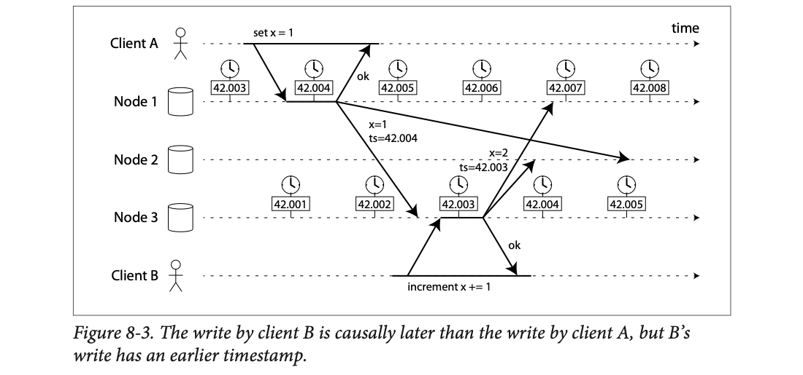
Five horizontal lines: Client A, Node 1, Node 2, Node 3, Client B; time runs left to right. Little clock icons show each node's own clock reading at that moment. Node 1's clock reads 42.003, 42.004, …; Node 3's reads 42.001, 42.002, …, about 1–2 ms behind. Client A's set x = 1 is processed by Node 1 when its clock says 42.004, so the write is tagged ts=42.004 and sent to Nodes 2 and 3. Node 3 receives it; then Client B sends increment x += 1 to Node 3, which makes x = 2 and tags it ts=42.003 because Node 3's clock is behind. Both writes reach Node 2. Node 2 compares timestamps: 42.004 > 42.003, so it keeps x = 1 and throws away x = 2, even though x = 2 clearly happened after (it was built on top of) x = 1.
Each replicated write is tagged with the time-of-day clock of the node where it originated. Synchronization here is very good: skew between node 1 and node 3 is under 3 ms, probably better than you'll get in practice. Still the timestamps order the events wrongly: x = 1 has 42.004 s and x = 2 has 42.003 s, though x = 2 happened unambiguously later. Node 2 concludes x = 1 is newest and drops x = 2. Client B's increment is lost.
This conflict-resolution strategy is last write wins (LWW), widely used in multi-leader replication and leaderless databases such as Cassandra and Riak (Ch.5 "Last write wins"). Some implementations generate timestamps on the client instead of the server, but that doesn't change LWW's basic problems:
So "keep the most recent value" sounds nice, but "recent" depends on a local time-of-day clock that may be wrong. Even with tightly NTP-synced clocks, you could send a packet at 100 ms (sender's clock) and have it arrive at 99 ms (receiver's clock): it looks like it arrived before it was sent, which is impossible.
Could NTP ever be accurate enough to avoid wrong orderings? Probably not: NTP's accuracy is limited by network round-trip time, plus quartz drift. For correct ordering, the clock would need to be much more accurate than the thing being measured (the network delay).
Logical clocks, based on incrementing counters instead of an oscillating quartz crystal, are a safer way to order events. They don't measure time of day, only relative order (did one event happen before or after another). Ordinary time-of-day clocks are therefore called physical clocks. More in Ch.9 "Ordering Guarantees".
Node 3's clock is behind Node 1 by the skew you choose. A's write happens at real time 42.004; B's increment happens 1 ms later (real 42.005). Node 2 applies LWW.
The book's numbers (42.004 and 42.003). Watch how the increment that happened later ends up with the earlier timestamp and is thrown away.
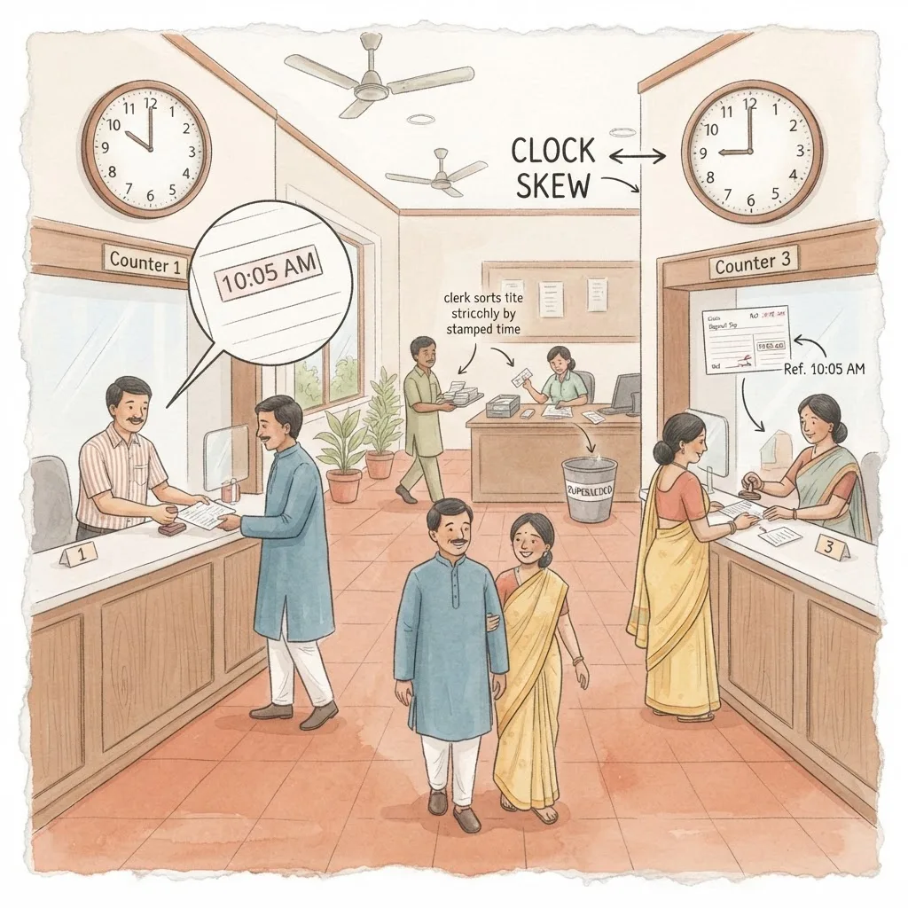
Two cashiers at a bank, each with a cheap wall clock, stamp deposit slips. Ravi deposits ₹1,000 at counter 1 (clock says 11:00:04). Then his wife adds ₹500 more at counter 3, which is based on the first deposit, but counter 3's clock is slow and stamps 11:00:03. Head office, sorting by stamp, thinks the ₹500 slip is "older" and discards it as superseded. ₹500 vanishes, and nobody gets an error. Where it breaks: a human auditor would notice the second slip references the first; LWW only looks at the stamp.
"Happened-before" (causality) is a fact about information flow: B's write saw A's write. Physical timestamps don't capture information flow; they capture whatever each local quartz said. When the skew is bigger than the gap between causally related events, the order flips. Logical clocks (Lamport clocks, version vectors) are built directly from information flow, so they can't flip it.
You may read a clock with microsecond or nanosecond resolution, but that doesn't mean it's accurate to that precision. It most likely isn't: quartz drift can easily be several milliseconds even if you sync with an NTP server on the local network every minute. With a public internet NTP server, the best accuracy is probably tens of milliseconds, and error may spike to over 100 ms under network congestion.
So think of a clock reading as a range of times within a confidence interval, not a point: e.g. a system may be 95% confident the time is between 10.3 and 10.5 seconds past the minute, but doesn't know more precisely. If we only know the time ±100 ms, the microsecond digits are meaningless.
The uncertainty bound can be computed from your time source. With a GPS receiver or atomic (caesium) clock attached directly to your computer, the manufacturer reports the expected error. If you get time from a server, uncertainty ≈ expected quartz drift since last sync + the NTP server's uncertainty + network round-trip time to the server (a first approximation, assuming you trust the server).
Unfortunately most systems don't expose this uncertainty: clock_gettime() doesn't tell you the expected error, so you don't know whether the interval is 5 milliseconds or 5 years.
An exception: Google's TrueTime API in Spanner explicitly reports the confidence interval. Ask for the current time and you get two values: [earliest, latest]. Based on its calculations, the actual time is somewhere in that interval. The width depends, among other things, on how long since the local quartz was last synced with a more accurate source.
Uses the book's recipe: drift since last sync + server uncertainty + round-trip time. Pick numbers and see the interval around a reading of 10.400 s.
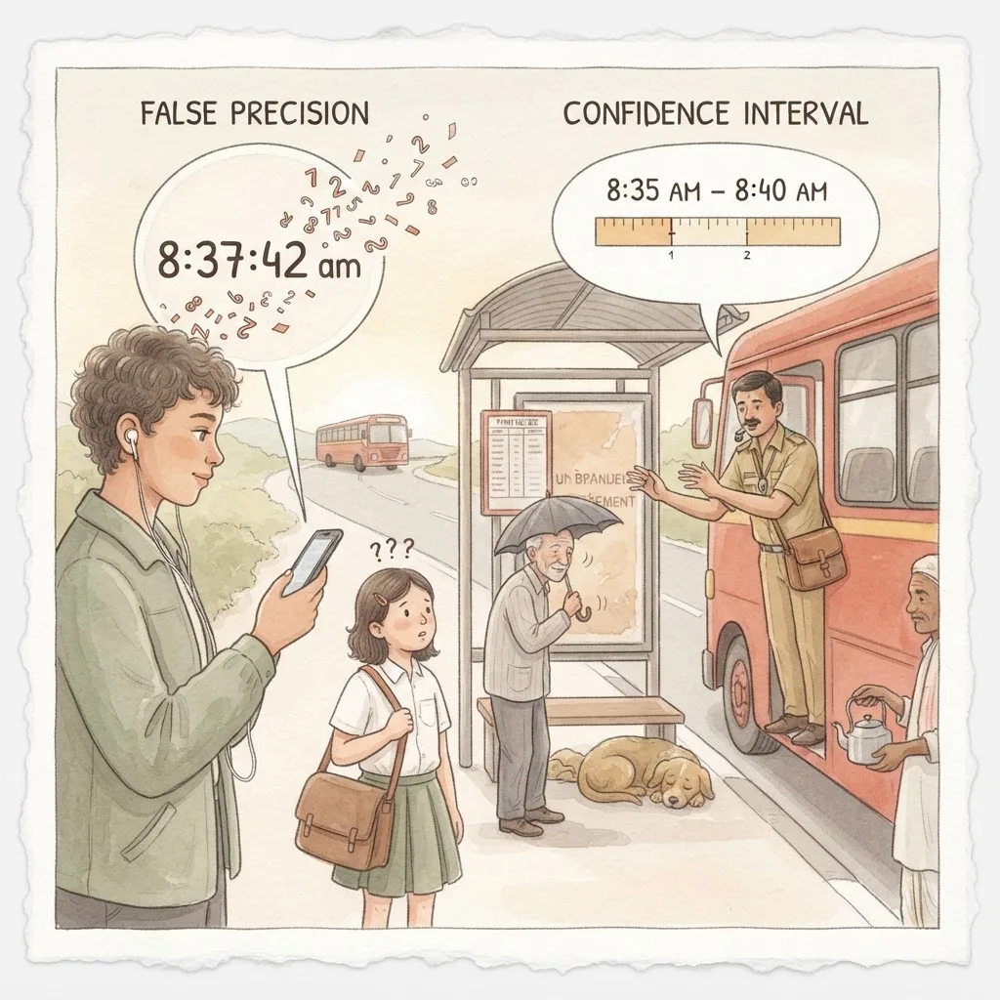
Asking "when will the bus come?" at a stop. A naive app says "11:42:17" (false precision). An honest conductor says "between 11:40 and 11:45" (an interval). TrueTime is the honest conductor. Where it breaks: the conductor's range is a guess; TrueTime's range is computed from known error sources and backed by GPS and atomic clocks.
Precision (how many digits) is not accuracy (how close to the truth). A reading is only as good as its error bound, and the error bound grows linearly with time since the last sync (drift) plus a fixed part from the sync itself.
Recall snapshot isolation (Ch.7 "Snapshot isolation and repeatable read"): useful for databases that need both small fast read-write transactions and big long-running read-only ones (backups, analytics). Read-only transactions see the database in a consistent state at one point in time, without locking and blocking read-write transactions.
The most common implementation needs a monotonically increasing transaction ID. If a write happened after the snapshot (it has a bigger transaction ID), the snapshot doesn't see it. On a single-node database a simple counter is enough.
But when the database is spread across many machines, maybe several datacenters, a global monotonically increasing ID (across all partitions) is hard to generate, because it needs coordination. The ID must reflect causality: if transaction B reads a value written by A, B must have a higher ID than A, or the snapshot isn't consistent. With lots of small, fast transactions, generating IDs becomes an untenable bottleneck.
Footnote vi: distributed sequence generators like Twitter's Snowflake produce approximately monotonically increasing unique IDs in a scalable way (e.g. giving blocks of the ID space to different nodes). But they usually can't guarantee ordering consistent with causality, because blocks are handed out on a timescale longer than database reads and writes. (See Ch.9 "Ordering Guarantees".)
Can we use timestamps from synchronized clocks as transaction IDs? If sync were good enough, they'd have the right property: later transactions get higher timestamps. The problem is uncertainty about clock accuracy.
Spanner does exactly this across datacenters. It uses TrueTime's confidence interval and this observation: given two intervals A = [Aearliest, Alatest] and B = [Bearliest, Blatest], if they don't overlap (Aearliest < Alatest < Bearliest < Blatest), then B definitely happened after A. Only if they overlap are we unsure of the order.
To make timestamps reflect causality, Spanner deliberately waits for the length of the confidence interval before committing a read-write transaction (commit wait). That makes sure any transaction that might read the data happens late enough that their intervals don't overlap. To keep the wait short, Spanner keeps clock uncertainty small: Google puts a GPS receiver or atomic clock in each datacenter, syncing clocks to within about 7 ms.
Using clock sync for distributed transaction semantics is an active research area. The ideas are interesting but (as of the book) not implemented in mainstream databases outside Google.
Transaction A commits; transaction B starts later. Move B's start and the uncertainty ε (each interval is reading ± ε). Then try "commit wait".
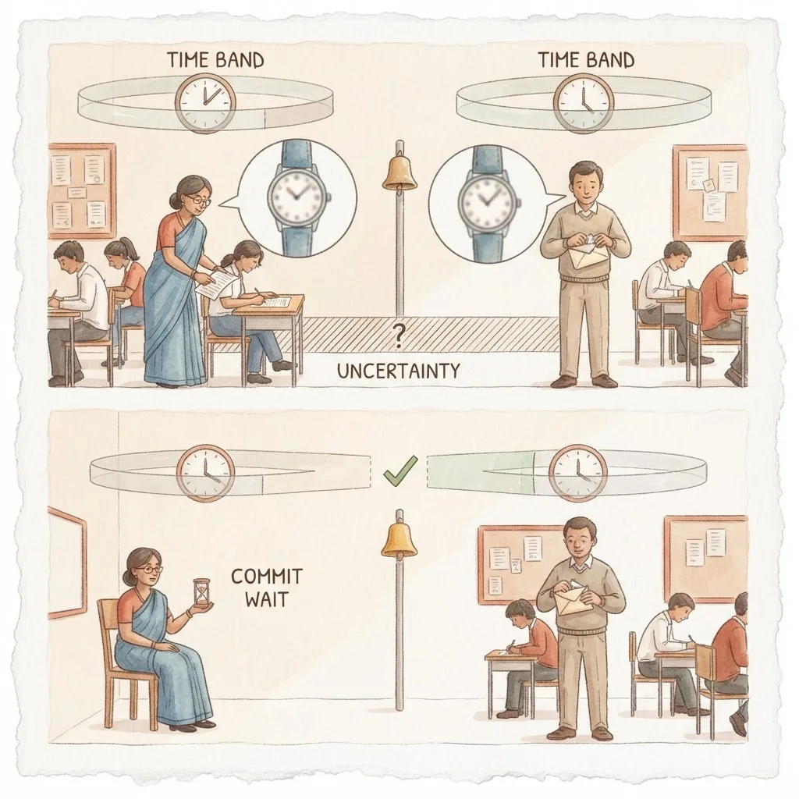
Two exam invigilators with slightly unreliable watches, each sure only to within ±7 minutes. If the first says "paper submitted at 10:00 ±7" and the second says "answer key released at 10:05 ±7", you can't be sure the paper came before the key (10:07 vs 9:58 are both possible). So the first invigilator waits 7 extra minutes before declaring "submitted", guaranteeing any later event's range starts after hers ends. Where it breaks: invigilators can just compare watches in the same room; Spanner's nodes are continents apart.
If every timestamp is "true time ± ε", waiting out the length of the confidence interval after picking your timestamp guarantees that real time has passed it everywhere. Anyone who later sees your data must pick a timestamp whose interval is entirely after yours. Smaller ε → shorter wait → that's why Google invests in GPS and atomic clocks.
Another dangerous use of clocks. A database has one leader per partition; only the leader accepts writes. How does a node know it's still the leader (not declared dead by others) and may safely accept writes?
One option: the leader gets a lease from the other nodes, which is like a lock with a timeout. Only one node can hold the lease at a time, so a node holding it knows it's leader until the lease expires. To stay leader it must renew the lease periodically before expiry. If it fails, it stops renewing and another node takes over when the lease expires.
The request-handling loop might look like this (the book's code):
while (true) {
request = getIncomingRequest();
// Ensure that the lease always has at least 10 seconds remaining
if (lease.expiryTimeMillis - System.currentTimeMillis() < 10000) {
lease = lease.renew();
}
if (lease.isValid()) {
process(request);
}
}What's wrong? First, it relies on synchronized clocks: the lease's expiry time was set by a different machine (e.g. "current time + 30 seconds" on that machine) and is compared with the local system clock. If clocks differ by more than a few seconds, the code does strange things.
Second, even if we switch to the local monotonic clock, the code assumes very little time passes between checking the time (System.currentTimeMillis()) and processing the request (process(request)). Normally the code is fast, so a 10-second buffer is plenty.
But what if the program pauses unexpectedly? Imagine the thread stops for 15 seconds around lease.isValid(). By the time it processes the request, the lease has probably expired and another node is already leader. Nothing tells the thread it was paused, so it won't notice until the next loop iteration, by which time it may have already done something unsafe.
Is a 15-second pause crazy? Unfortunately not. Causes:
All of these can preempt the running thread at any point and resume it later, without the thread noticing. It's like making multi-threaded code thread-safe on one machine: you can't assume anything about timing, because arbitrary context switches and parallelism may happen.
On one machine we have good tools for thread safety: mutexes, semaphores, atomic counters, lock-free data structures, blocking queues. These don't translate to distributed systems, which have no shared memory, only messages over an unreliable network.
A node must assume its execution can be paused for a significant time at any point, even mid-function. During the pause the rest of the world keeps moving and may declare the paused node dead. Eventually the node continues, not even noticing it was asleep, until it checks its clock sometime later.
The lease has 12 s left when the check passes (≥10 s buffer). Choose how long the thread freezes between lease.isValid() and process(request).
The highlighted line is where the thread is. The 15 s pause is the book's; the clock times are modelled.
while (true) { request = getIncomingRequest(); // Ensure that the lease always has at least 10 seconds remaining if (lease.expiryTimeMillis - System.currentTimeMillis() < 10000) { lease = lease.renew(); } if (lease.isValid()) { process(request); }}A security guard checks his duty roster at 9:59: "I'm on shift till 10:10, fine." He then dozes off on his chair for 20 minutes. At 10:19 he wakes up, feels like only a second passed, and confidently stops a visitor, though the 10:10 guard has already taken over and let the visitor in. Two guards now give conflicting orders. Where it breaks: a human usually feels groggy after sleeping; a paused thread feels nothing at all.
"Check, then act" is only safe if nothing can happen between check and act. On one machine, locks make the gap atomic. Across machines there is no shared lock, and pauses can stretch the gap arbitrarily. So the safety check must happen at the resource, at the moment of the action, which is exactly what fencing tokens (plate 26) do.
Threads and processes may pause for unbounded time, as above. But those causes can be eliminated if you try hard enough.
Some software runs where failing to respond in time causes serious damage: computers controlling aircraft, rockets, robots, cars must respond quickly and predictably to sensor input. There's a specified deadline; missing it may fail the whole system. These are hard real-time systems. Example: if your car's sensors detect a crash, you don't want the airbag release delayed by an inopportune GC pause.
Footnote vii: in embedded systems, real-time means carefully designed and tested to meet specified timing guarantees in all circumstances. On the web, "real-time" is used more loosely for servers pushing data to clients and stream processing without hard deadlines (Ch.11).
Real-time guarantees need support from every layer of the stack:
That's a lot of extra work and severely limits the languages, libraries and tools you can use (most don't offer real-time guarantees). So real-time systems are very expensive, mostly used in safety-critical embedded devices. Also, real-time is not the same as high performance: real-time systems may have lower throughput, because they prioritize timely responses above everything else (plate 12).
For most server-side data systems, real-time guarantees aren't economical or appropriate. They must live with pauses and clock instability of a non-real-time environment.
| Hard real-time (airbag, flight control) | Typical server (database, web API) | |
|---|---|---|
| Deadline | specified, must never be missed | "fast on average", p99 targets |
| OS | RTOS with guaranteed CPU slots | Linux, general-purpose scheduler |
| Memory | no / limited dynamic allocation | GC languages, heaps of GBs |
| Throughput | may be lower | optimized for throughput and cost |
| Cost | very high (tools, testing) | low; accept pauses |
How to read this picture: a deadline is a sum. Total time = scheduler wait + library time + memory work + I/O. If every term has a ceiling (left), the sum has a ceiling. If even one term has no ceiling (right, red rows), the sum has no ceiling, however fast it is on average. The "1 ms slot" is an illustration, not a number from the book.
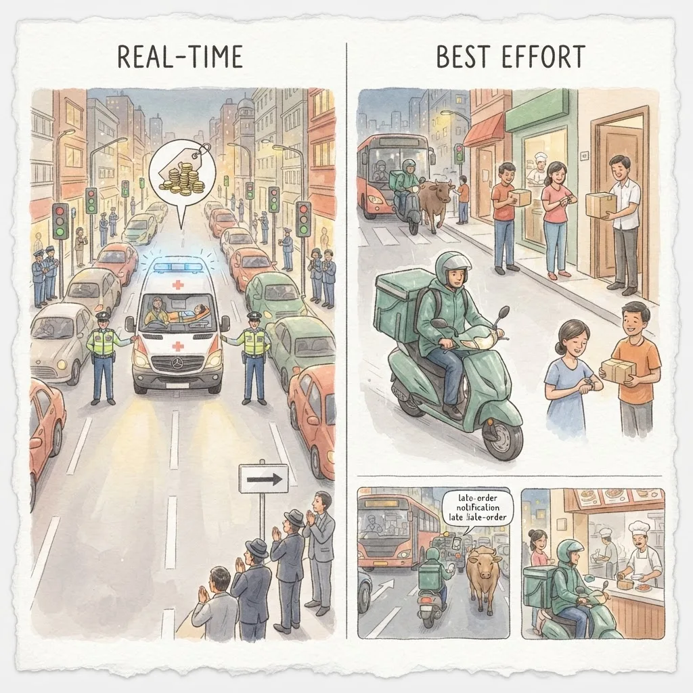
An ambulance vs a food-delivery rider. The ambulance gets a green corridor, a dedicated driver and a cleared road: it will arrive in time, but it is very expensive and carries one patient. The rider delivers 30 orders an evening cheaply and is usually on time, but one traffic jam or a long wait at a restaurant makes an order an hour late, and nobody promised otherwise. Databases are delivery riders. Where it breaks: a green corridor is arranged on the day; real-time guarantees must be designed into every layer (OS, libraries, memory) in advance.
A worst-case time bound for the whole system requires a worst-case bound for every component, including the scheduler, allocator and libraries. One unbounded component (a GC, a page fault) breaks the guarantee. Removing all of them costs flexibility and throughput.
Process pauses can be softened without expensive real-time scheduling. Language runtimes have some freedom about when to schedule GCs, since they can track the allocation rate and remaining free memory.
These measures can't fully prevent GC pauses, but they usefully reduce their impact.
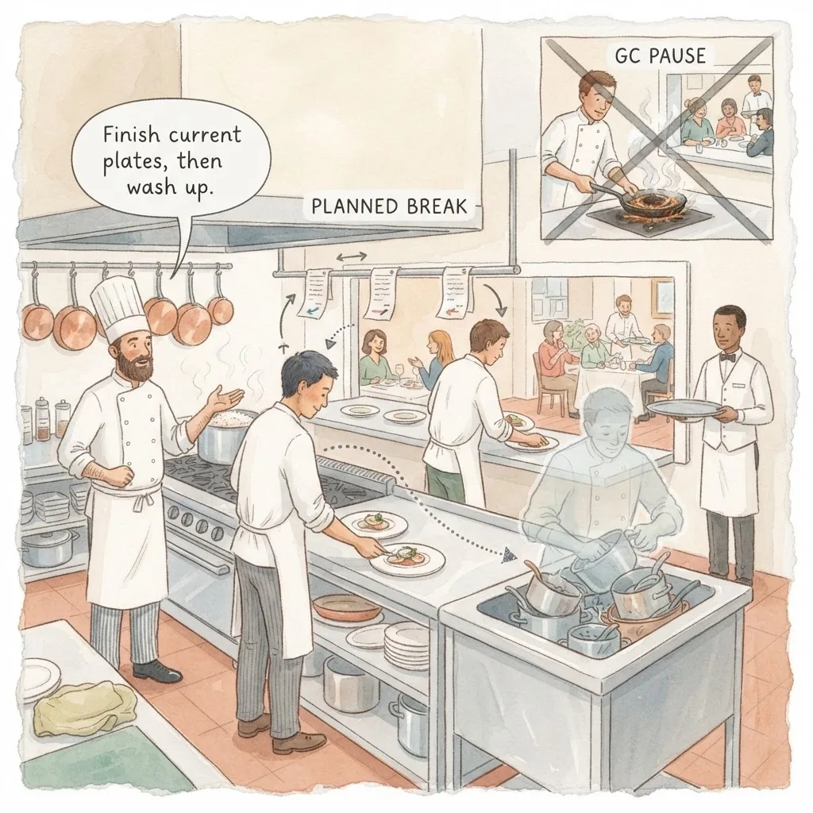
A restaurant with three cooks. Instead of a cook suddenly stopping mid-order to wash all the dishes (GC pause), the head chef says "Cook 2, finish your current plates, take no new orders, then wash up." The other two take the new orders, and customers never wait. Where it breaks: a cook can tell the head chef "I need to wash up soon"; most runtimes can't yet warn the app reliably.
The problem with GC isn't the pause itself but that it is unplanned and happens while requests are in flight. Draining traffic first converts an unpredictable latency spike into planned, invisible capacity loss on one node.
So far: distributed systems differ from single-computer programs in that there's no shared memory, only message passing over an unreliable network with variable delays, plus partial failures, unreliable clocks and processing pauses.
The consequences are deeply disorienting. A node can't know anything for sure; it can only guess from the messages it receives (or doesn't). It learns another node's state (data stored, whether it works) only by exchanging messages. If a remote node doesn't respond, there's no way to know its state, because network problems can't be reliably distinguished from node problems.
This borders on philosophy: What do we know to be true or false in our system? How sure can we be, if perception and measurement are unreliable? Should software obey laws we expect of the physical world, like cause and effect?
Luckily we don't need to solve the meaning of life. We can state our assumptions about how the system behaves (the system model) and design the system to meet them. Algorithms can be proved correct within a system model. So reliable behaviour is achievable even if the underlying model gives very few guarantees.
But making software well-behaved in an unreliable model isn't easy. The rest of the chapter explores knowledge and truth, which helps us think about which assumptions we can make and which guarantees to offer. Chapter 9 then shows algorithms giving particular guarantees under particular assumptions.
Node A last heard from node B at 12:00:03. It is now 12:00:07. Is B dead? A can't know. If A's timeout is 3 s, A suspects B. But B might have just started a 5-second GC pause (plate 20), its reply might be sitting in a switch queue (plate 9), or its outbound link might be broken (plate 24). So instead of A deciding alone, the system asks: "do a majority of nodes agree that B is unreachable?" That is the move the next plate makes. (Times are modelled.)
Node A only sees what arrives in its inbox. The hatched bar is what really happened to B, hidden from A. Times modelled.
Studying a faraway star: the light you see left it years ago, so you only know what the star was. A node's knowledge of another node is the same: it's always a picture of the past, delivered late, maybe never. Where it breaks: starlight arrives at a predictable speed; network messages don't.
Without shared state, "truth" in a distributed system can only be defined by agreement among nodes and by explicit assumptions. That's why the next plates move from "what is true" to "what does the majority agree on" and "what does our model assume".
Three stories:
The moral: a node can't necessarily trust its own judgement of a situation. A distributed system can't rely only on one node, because a node can fail any time, leaving the system stuck. Instead, many distributed algorithms rely on a quorum (Ch.5 "Quorums for reading and writing"): decisions are made by a majority of nodes (e.g. 2 of 3, or 3 of 5).
That includes deciding a node is dead. If a majority declares a node dead, it must be considered dead, even if it feels alive. The node must accept the majority decision and step down.
Why a majority? With a fixed number of nodes, the system keeps working when some fail (3 nodes tolerate 1 failure; 5 nodes tolerate 2). And it's still safe, because there can be only one majority; two majorities with conflicting decisions can't exist at the same time. Details in Ch.9's consensus algorithms.
Click nodes to mark them failed/unreachable. A decision needs a strict majority of the total cluster, not of those reachable.
5 nodes, majority = ⌊5/2⌋ + 1 = 3. Network splits into {A, B} and {C, D, E}. Only {C, D, E} has 3 votes, so only that side can declare A and B dead or elect a leader. {A, B} has 2 < 3 and must stop. Two majorities would need 3 + 3 = 6 nodes, but there are only 5, so it's impossible. (With 4 nodes, majority is 3; a 2–2 split leaves no side able to decide, which is why odd sizes are preferred. That last point is Beyond the book, but follows from the same rule.)
Three nodes. Node 1 is leader and pauses for one minute (the book's example). The other times are modelled.
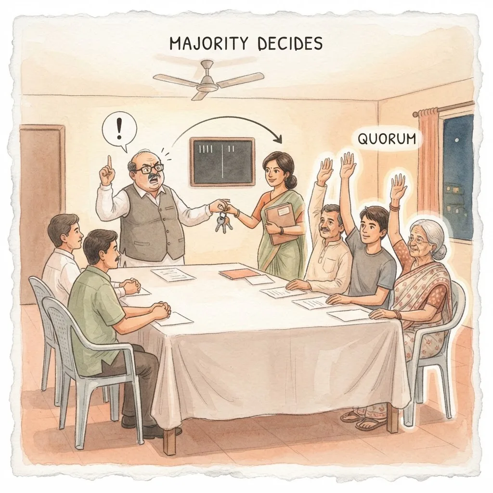
A housing society committee of 5. Even if the secretary insists "I'm still secretary!", if 3 of 5 members vote him out, he's out, and he must hand over the keys. And there can never be two groups each with 3 of 5 votes. Where it breaks: committee members can see each other in the hall; nodes only know who answered their messages.
Any two majorities of the same set must overlap in at least one member. That shared member can't vote for two contradictory decisions (if it remembers its votes), so conflicting decisions can't both win. This "quorum intersection" property is the foundation of consensus.
Often a system needs there to be only one of something:
Doing this in a distributed system needs care. Even if a node believes it's "the chosen one" (leader of the partition, lock holder, handler of the user who grabbed the username), that doesn't mean the majority agrees! It may have been leader before, but if others declared it dead meanwhile (network interruption, GC pause), it may have been demoted and another leader elected.
If a node keeps acting as the chosen one after the majority declared it dead, it can cause problems in a system not carefully designed. It may send messages in its self-appointed role, and if others believe it, the whole system may do something wrong.
How to read this picture: each row is one of the book's three "only one of something" cases. The middle column is the truth (what the majority decided while the old node was cut off or paused). The left column is the stale belief. The right column is the damage if the stale node acts on its belief and others believe it. The names (partition 7, @dhanesh) are made up for the picture.
Figure 8-4 shows a data corruption bug from incorrect locking. (Not theoretical: HBase used to have this problem.) You want a file in a storage service to be accessed by one client at a time (concurrent writes would corrupt it), so you require clients to get a lease from a lock service before accessing the file.
This is the process-pause problem (plate 20): if the lease holder is paused too long, its lease expires. Another client gets a lease for the same file and starts writing. When the paused client comes back, it wrongly believes it still has a valid lease and also writes. The writes clash and corrupt the file.
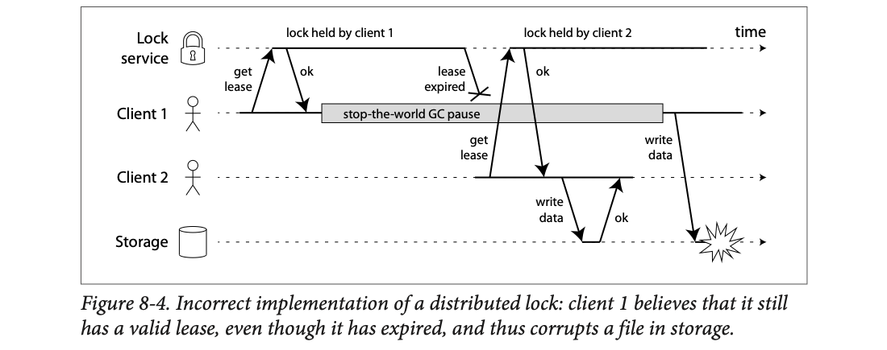
Four lines: Lock service, Client 1, Client 2, Storage. Client 1 sends "get lease", lock service answers "ok", and the top bar says "lock held by client 1". Immediately Client 1 enters a long grey "stop-the-world GC pause". While it's frozen, the lease runs out ("lease expired", the X on the lock line). Client 2 asks for the lease and gets "ok"; the top bar now says "lock held by client 2". Client 2 writes data to storage and gets "ok": correct. Then Client 1's pause ends. It doesn't know time passed, so it sends "write data" too. The starburst on the storage line is the corruption: two clients wrote under what each thought was an exclusive lock.
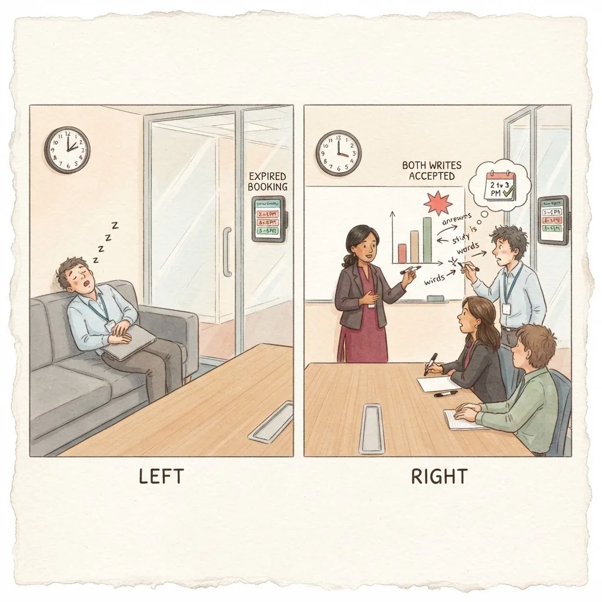
A meeting room booked through the office app for 2–3 pm. You go in at 2, fall asleep on the sofa, and wake at 3:20. Someone else booked 3–4 and is presenting. You wake up, still think "this is my slot", and start writing on the same whiteboard, mixing your notes into theirs. Where it breaks: the second person would shout at you; a storage service, by default, just accepts both writes.
The lock service's knowledge ("client 2 holds it now") and client 1's belief ("I hold it") diverged during the pause. The storage service didn't check either, so the stale belief won. The fix must make the storage service able to tell stale requests apart.
When a lock or lease protects a resource (like the file storage above), we must make sure a node that falsely believes it's the chosen one can't disrupt the system. A fairly simple technique is fencing.
Every time the lock server grants a lock or lease, it also returns a fencing token: a number that increases every time a lock is granted (e.g. incremented by the lock service). Every write request a client sends to storage must include its current fencing token.
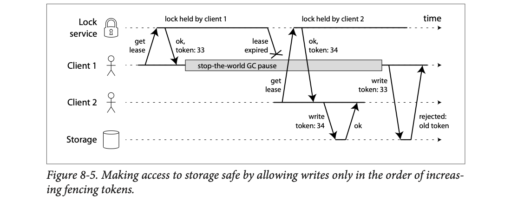
Same story as Figure 8-4, with numbers added. Client 1's "ok" now says token: 33. Client 1 pauses, lease expires. Client 2's "ok" says token: 34. Client 2 writes with token 34 → "ok"; storage now remembers "highest token seen = 34". Client 1 wakes and writes with token 33. Storage compares 33 < 34 and replies "rejected: old token". No corruption: the right-hand side is a clean reject instead of a starburst.
In Figure 8-5, client 1 gets the lease with token 33, then has a long pause and the lease expires. Client 2 gets the lease with token 34 (always increasing) and writes, including 34. Later client 1 comes back and writes with 33. The storage server remembers it already processed a write with a higher token (34), so it rejects the request with 33.
If ZooKeeper is the lock service, the transaction ID zxid or the node version cversion can be used as the fencing token. They're guaranteed to increase monotonically, so they have the right property.
Note: this needs the resource itself to actively check tokens and reject any write whose token has gone backwards. It's not enough to rely on clients checking their own lock status. For resources that don't support fencing tokens explicitly, you may still work around it (e.g. for a file storage service, include the fencing token in the filename). But some kind of check is necessary to avoid processing requests outside the lock's protection.
Server-side checking might look like a downside, but it's arguably good: a service shouldn't assume its clients will always behave, because clients are often run by people with very different priorities from those running the service (ref: "Clients are jerks", about Halo 4's launch). Any service should protect itself from accidentally abusive clients.
// storage-side check (sketch, not from the book)
long maxTokenSeen = 0;
synchronized Result write(long token, Data d) {
if (token < maxTokenSeen) return REJECTED_OLD_TOKEN;
maxTokenSeen = token;
return apply(d);
}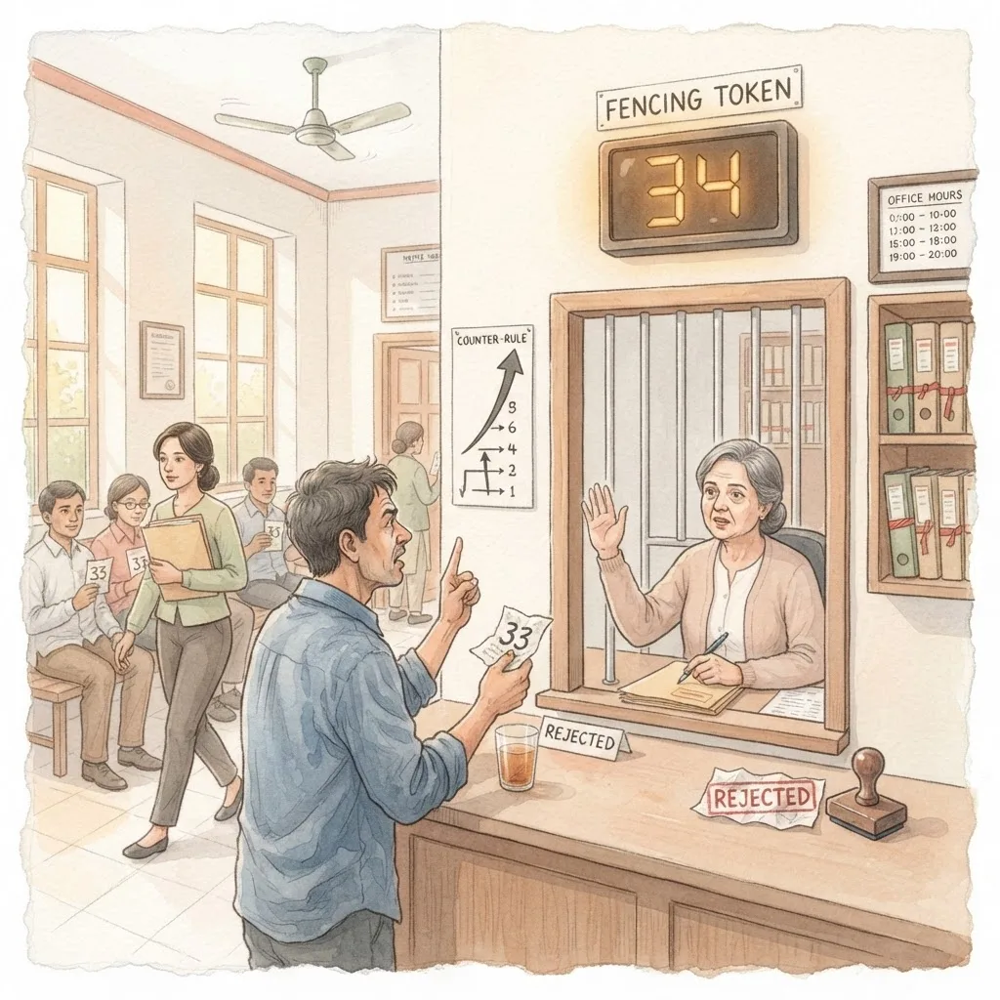
A token number at a government office counter. When the clerk has served token 34, she won't serve token 33 who wandered back from the canteen, even if 33 insists it was "his turn". The counter enforces the order, not the people in line. Where it breaks: at the office, 33 might be served later out of kindness; storage must reject 33 forever once 34 has written.
The lock service creates a total order of "who held the lock when" (33 then 34). The storage service enforces that order at the moment of each write. A stale client's belief no longer matters, because the decision is made by the resource, using information the stale client can't fake (assuming honest clients, plate 27).
Fencing tokens detect and block a node that is accidentally wrong (e.g. it hasn't yet found out its lease expired). But a node that deliberately wanted to break the system's guarantees could easily send a fake fencing token.
This book assumes nodes are unreliable but honest: they may be slow or never respond (fault), their state may be outdated (GC pause, network delay), but if a node responds, it tells the "truth": to the best of its knowledge it plays by the protocol's rules.
Problems get much harder if nodes may "lie" (send arbitrary faulty or corrupted responses), e.g. claim to have received a message they never got. Sending untrue messages is a Byzantine fault, and reaching consensus in such an untrusting environment is the Byzantine Generals Problem.
It generalizes the Two Generals Problem: two army generals camped on different sites must agree on a battle plan, communicating only by messenger, and messengers are sometimes delayed or captured (like network packets). (More on this consensus problem in Ch.9.)
In the Byzantine version there are n generals, and some are traitors. Most are loyal and send truthful messages; traitors try to deceive and confuse by sending fake or untrue messages while staying undiscovered. Nobody knows in advance who the traitors are.
Byzantium was an ancient Greek city that became Constantinople, now Istanbul in Turkey. There's no evidence its generals were any more prone to intrigue than others. The name comes from byzantine meaning "excessively complicated, bureaucratic, devious", used in politics long before computers. Lamport wanted a nationality that wouldn't offend readers, and was advised that calling it The Albanian Generals Problem was not a good idea.
A system is Byzantine fault-tolerant if it keeps working correctly even when some nodes malfunction and don't follow the protocol, or attackers interfere with the network. This matters in specific cases:
In the systems this book discusses, we can usually safely assume no Byzantine faults. In your datacenter all nodes are controlled by your organization (hopefully trustworthy), and radiation is low enough that memory corruption isn't a major problem. Byzantine fault-tolerant protocols are quite complicated, and fault-tolerant embedded systems rely on hardware support. For most server-side data systems the cost makes them impractical.
A software bug could count as a Byzantine fault, but if you deploy the same software to all nodes, a Byzantine fault-tolerant algorithm can't save you. Most such algorithms need a supermajority of more than two-thirds of nodes working correctly (with 4 nodes, at most 1 may malfunction). To use this against bugs, you'd need four independent implementations of the same software and hope a bug appears in only one.
Likewise, it would be nice if a protocol protected us from vulnerabilities, security compromises and attacks. Not realistic either: if an attacker can compromise one node, they can probably compromise all (same software). So traditional mechanisms (authentication, access control, encryption, firewalls, etc.) remain the main protection against attackers.
Crash faults: majority must be alive → tolerate ⌊(n−1)/2⌋. Byzantine faults: more than two-thirds must be correct → tolerate ⌊(n−1)/3⌋ (the "n ≥ 3f + 1" rule; the book gives the 4-nodes-1-fault example).
Generals send "attack" or "retreat". A loyal general takes the majority of what it hears. A simplified sketch (beyond the book) of why 4 nodes can survive 1 liar but 3 cannot.
4 nodes: crash faults need a majority alive (3 of 4), so 1 may crash. Byzantine faults need more than two-thirds correct: 3 of 4 is 75% > 66.7%, so 1 may lie. 7 nodes: survive 3 crashes, but only 2 liars (5 of 7 = 71% honest). Same hardware, much less tolerance once nodes can lie.
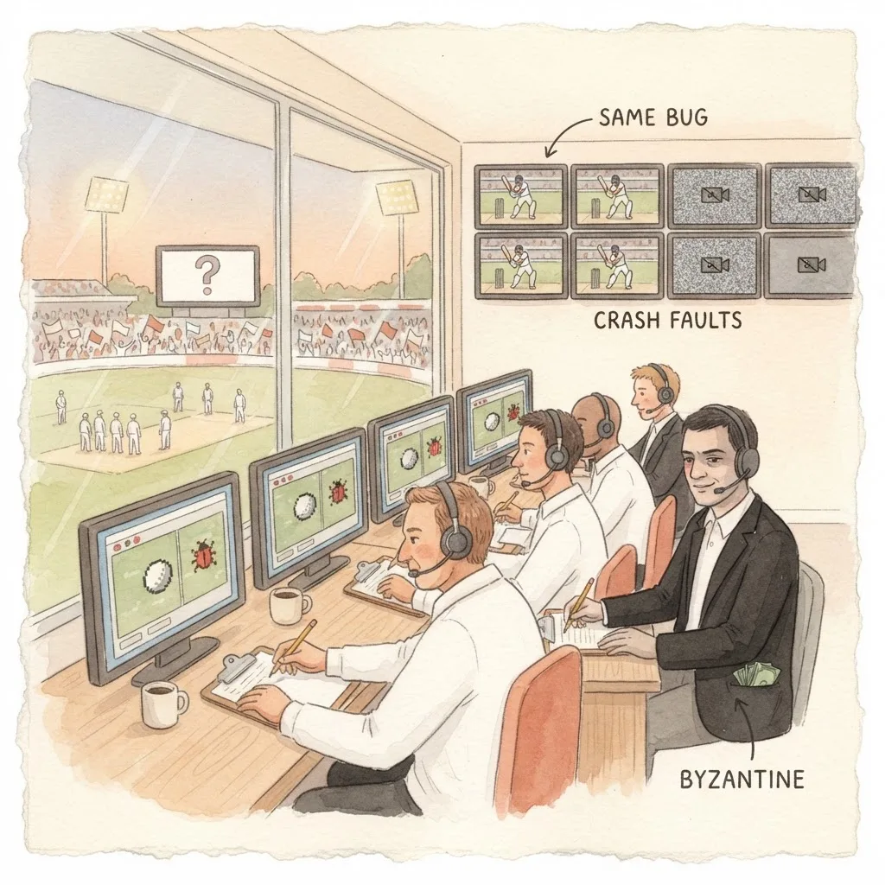
A cricket match's third umpire panel. If everyone is honest but some cameras may be broken (crash faults), you just need most cameras working. If some umpires might be fixing the match (Byzantine), you need many more honest umpires than crooked ones, and you don't know who is crooked. In a normal company datacenter, the umpires are your own employees, so you assume nobody is match-fixing. Where it breaks: if all umpires watch the same buggy replay software, adding umpires doesn't help, exactly like the book's "same software on all nodes" point.
With liars, a node can't take any single message at face value; it needs enough independent confirmations that honest nodes outvote liars even in the worst arrangement. That costs more nodes (3f + 1 instead of 2f + 1) and many more messages. It only helps if faults are independent, which identical software breaks.
Even assuming nodes are generally honest, it's worth guarding against weak forms of "lying": invalid messages due to hardware issues, software bugs, misconfiguration. These aren't full Byzantine tolerance (a determined adversary would beat them), but they are simple, pragmatic steps to better reliability:
Five servers report a time (seconds past the minute). Drag server E away to make it "wrong". The client keeps the servers whose readings agree with the majority (within ±0.05 s of the median, a simplified rule).
The sender computes a CRC-32 (a 32-bit checksum, a fingerprint of the bytes) and sends it with the message. The receiver computes it again. If even one bit changed on the way, the fingerprints differ. The CRC-32 maths is real; the payment message is made up. Edit it if you like.
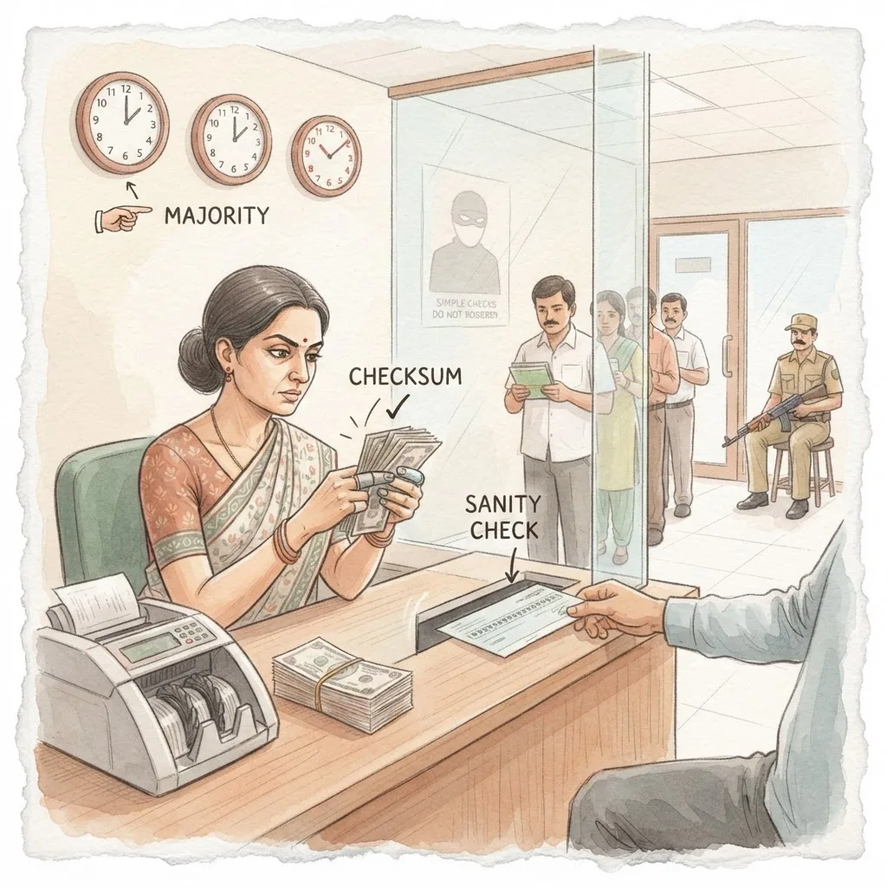
Counting cash at a bank: the cashier recounts a bundle (checksum), refuses a cheque for "₹99999999999" (input sanity check), and when three clocks in the branch disagree, trusts the two that match (NTP majority). None of these stop an organized robbery, but they catch everyday mistakes. Where it breaks: a skilled forger would beat these checks; that's what full Byzantine tolerance or security tools are for.
Most "lies" in real systems are accidents, not attacks. Accidents are random, so cheap redundancy (an extra hash, a bounds check, asking a few servers) catches nearly all of them at very low cost.
Many algorithms solve distributed-systems problems (e.g. consensus in Ch.9). To be useful they must tolerate the faults in this chapter. They must be written so they don't depend too much on hardware/software details. That requires formalizing which faults we expect, by defining a system model: an abstraction describing what an algorithm may assume.
Timing assumptions: three common models.
Node failures: three common models.
For modelling real systems, the partially synchronous model with crash-recovery faults is generally the most useful. But how do algorithms cope with it?
Choose one timing model and one node model. The text says what an algorithm may and may not assume.
Each bar is one message's delay. Green = within the bound, red = over it. Delay values are modelled.
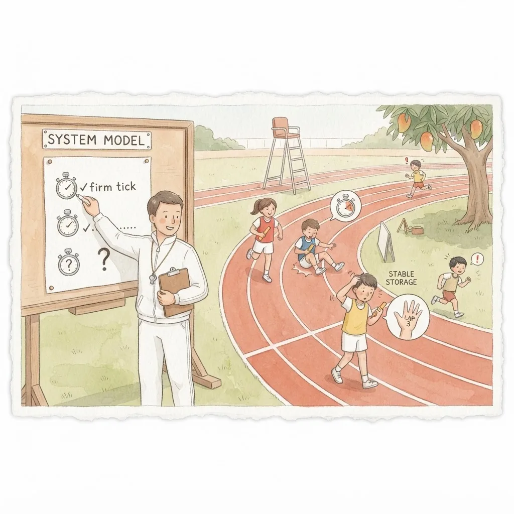
Rules for a school relay race written before race day. "Every runner finishes their lap within 2 minutes" (synchronous) is unrealistic: someone always trips. "Usually within 2 minutes, but sometimes much longer" (partially synchronous) is honest. "No idea how long" (asynchronous) means you can never declare a runner lost. For runners: "a runner who drops out never returns" (crash-stop), "a runner may rejoin later but forgets what lap it was, except what's written on his hand" (crash-recovery: the hand is stable storage), "a runner may cheat" (Byzantine). Where it breaks: real races have referees who see everything; distributed systems have none.
A system model is a contract: "the algorithm is correct as long as reality stays within these assumptions." Weaker assumptions (async, Byzantine) make algorithms more robust but harder or impossible to build; stronger ones (sync, crash-stop) make them easy but fragile. Partially synchronous + crash-recovery is the practical middle.
To say what "correct" means, we describe an algorithm's properties. Example: the output of a sorting algorithm has the property that for any two distinct elements, the one further left is smaller than the one further right. That's a formal definition of "sorted".
Likewise for a distributed algorithm. If we generate fencing tokens for a lock (plate 26), we may require:
An algorithm is correct in some system model if it always satisfies its properties in all situations we assume may occur in that model. But does that make sense? If all nodes crash, or all network delays suddenly become infinite, no algorithm can get anything done. Plate 31 resolves this.
Each row is a token request (start → end time, returned token). Pick a history; the checker tests uniqueness and monotonic sequence. The bars below draw the same history on a time line: if one bar ends before another starts, the later one must get a bigger token. Bars that overlap may get tokens in either order. Red bars are part of a violation.
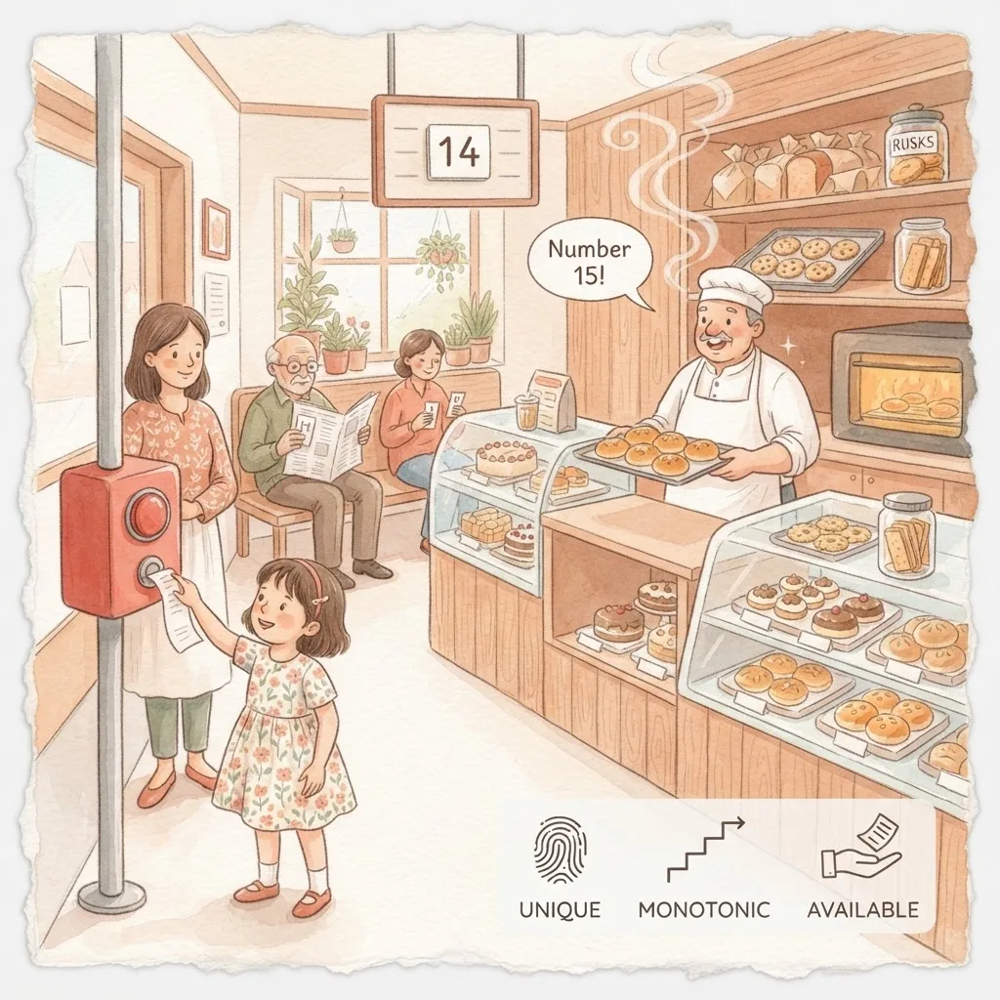
A bakery's token machine: never two customers with the same number (uniqueness); if you got your token after I'd already received mine, yours is higher (monotonic); and if you press the button and the machine isn't broken, you eventually get a slip (availability). Where it breaks: a bakery machine is one box; a distributed token generator is many machines that must agree.
"Monotonic sequence" only constrains requests that don't overlap in time (x completed before y began). Overlapping requests may get tokens in either order. This "real-time order" idea becomes linearizability in Ch.9.
Two different kinds of property: safety and liveness. Above, uniqueness and monotonic sequence are safety properties; availability is a liveness property.
A giveaway: liveness properties often contain the word "eventually". (And yes: eventual consistency is a liveness property.)
Informally, safety = nothing bad happens, liveness = something good eventually happens. Don't read too much into that, since "good" and "bad" are subjective. The precise definitions:
Why distinguish? It helps with difficult system models. For distributed algorithms it's common to require that safety always holds, in all possible situations of a system model. Even if all nodes crash or the whole network fails, the algorithm must never return a wrong result.
For liveness we may add caveats: e.g. a request needs a response only if a majority of nodes haven't crashed and only if the network eventually recovers. The partially synchronous model requires that the system eventually returns to a synchronous state: any network interruption lasts only a finite time and is then repaired.
Top: the uniqueness property of fencing tokens (plate 30). Bottom: the availability property. Times modelled.
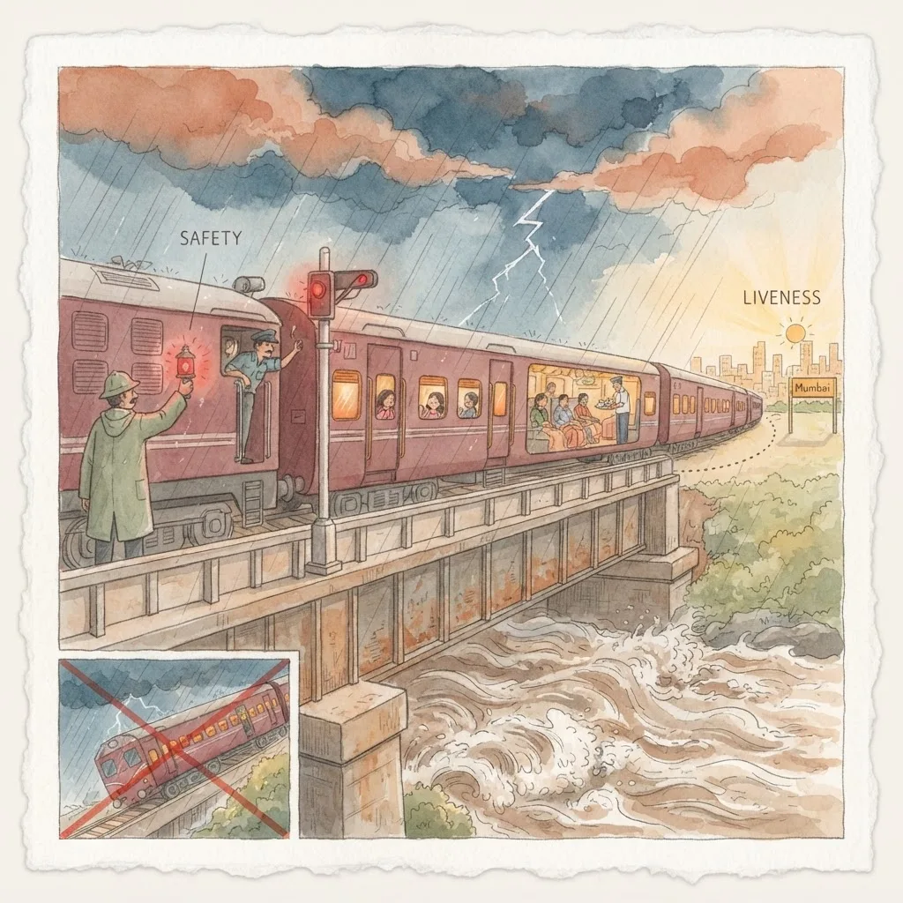
A train journey. Safety: "the train never crashes" — if it's ever violated you can name the exact moment, and it can't be undone. Liveness: "the train eventually reaches Mumbai" — at any moment it may not be there yet, but there's still hope. Indian Railways will stop the train in a storm (sacrifice liveness) rather than risk a crash (keep safety). Where it breaks: a train can be seen to be moving; a waiting node can't tell if the response is still coming.
A safety property is violated by a finite bad prefix of history; a liveness property can only be violated by an infinite history (you'd have to wait forever to be sure). That's why we can demand safety unconditionally but must make liveness conditional on the network and nodes eventually behaving.
Safety, liveness and system models are very useful for reasoning about correctness. But when implementing, messy reality bites again: the system model is a simplified abstraction.
Example: crash-recovery algorithms assume data in stable storage survives crashes. What if the disk data is corrupted, or wiped by hardware error or misconfiguration? What if a server has a firmware bug and doesn't recognize its hard drives on reboot, though they're correctly attached (GitHub, 2016)?
Quorum algorithms rely on a node remembering the data it claims to have stored. If a node may suffer amnesia and forget previously stored data, that breaks the quorum condition and the algorithm's correctness. Maybe a new model is needed where stable storage mostly survives crashes but is sometimes lost; but that model is harder to reason about.
The theory may declare some things assumed not to happen, and in non-Byzantine systems we must make some such assumptions. But a real implementation may still need code for the case where the "impossible" happens, even if it just does printf("Sucks to be you") and exit(666), i.e. lets a human operator clean up the mess. (Arguably this is the difference between computer science and software engineering.)
That doesn't make theoretical models worthless; quite the opposite. They're incredibly helpful for distilling real-system complexity into a manageable set of faults we can reason about, so we can understand and solve the problem systematically. We can prove algorithms correct by showing their properties always hold in a model.
Proving an algorithm correct doesn't mean its implementation will always behave correctly. But it's a very good first step: theoretical analysis can uncover problems that might stay hidden for a long time in a real system and only bite when assumptions (e.g. about timing) are defeated by unusual circumstances. Theoretical analysis and empirical testing are equally important.
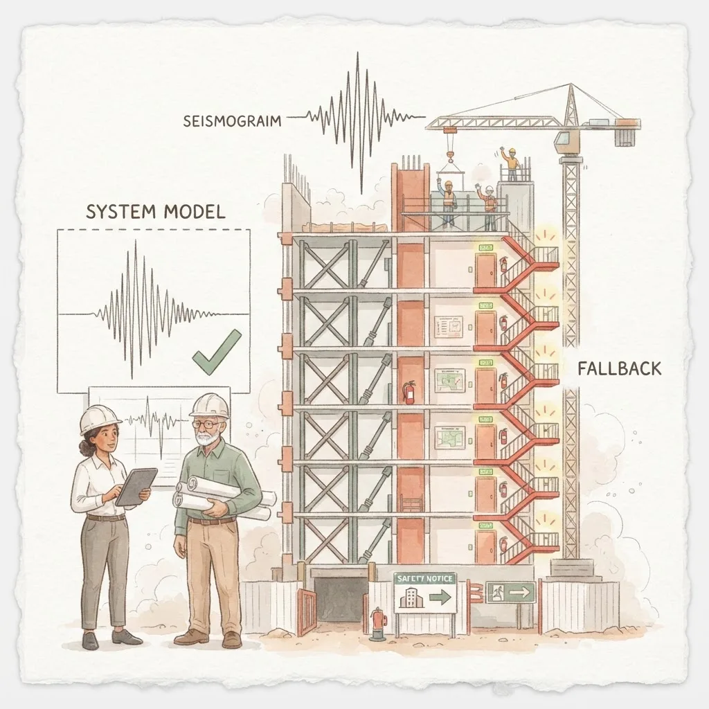
A building's earthquake design assumes "the ground shakes at most this much". Engineers prove the building stands under that assumption: very valuable. But they still put in fire exits and an emergency plan for when reality exceeds the model. The proof is the design; the exits are the printf("Sucks to be you"). Where it breaks: buildings get inspected after a quake; software often keeps running in a broken state unless you code the check.
Every proof is "if assumptions, then properties". Real systems violate assumptions occasionally (disk loss, firmware bugs). Good engineering combines proofs (to get the logic right) with defensive checks and testing (to catch assumption violations) and humans (to recover).
The chapter covered a wide range of problems in distributed systems:
All of these are partial failures. Anything involving other nodes may occasionally fail, randomly go slow, or not respond at all (and eventually time out). We build tolerance of partial failures into software, so the system as a whole keeps working while some parts are broken.
Step one is detecting faults, and even that is hard. Most systems have no accurate failure detector, so most algorithms rely on timeouts. But timeouts can't distinguish network failures from node failures, and variable delay sometimes causes a node to be falsely suspected. Also, a node can be degraded: e.g. a Gigabit network interface suddenly dropping to 1 kilobit/s because of a driver bug. A "limping" but not dead node can be even harder to deal with than a cleanly failed one.
Once detected, tolerating a fault is also hard: there's no global variable, no shared memory, no common knowledge or shared state between machines. Nodes can't even agree what time it is. Information flows only over the unreliable network. Major decisions can't safely be made by one node, so we need protocols that enlist other nodes and get a majority quorum to agree.
If you're used to the mathematical perfection of a single computer, this is a shock. Conversely, distributed-systems engineers often consider a problem trivial if it fits on one computer, and a single computer can do a lot nowadays. If you can avoid opening Pandora's box and keep things on one machine, it's generally worth doing so.
But scalability isn't the only reason for distribution (Part II intro): fault tolerance and low latency (data close to users) matter just as much, and can't be achieved with a single node.
We also saw the unreliability of networks, clocks and processes is not a law of nature: hard real-time guarantees and bounded network delay are possible but very expensive and lower hardware utilization. Most non-safety-critical systems choose cheap and unreliable over expensive and reliable.
Supercomputers assume reliable components and must be stopped and restarted entirely when one fails. Distributed systems can run forever without service-level interruption, since faults and maintenance are handled at the node level, at least in theory. (In practice, a bad configuration change rolled out to all nodes still brings a distributed system to its knees.)
This chapter was all problems and a bleak outlook. Chapter 9 moves on to solutions: algorithms designed to cope with all of this.
| Term | Plain meaning | Plate |
|---|---|---|
| Partial failure | Some parts broken, others fine; outcome non-deterministic | 2 |
| Shared-nothing | Machines with own memory/disk, talking only over a network | 5 |
| Asynchronous packet network | No guarantee when, or whether, a packet arrives | 5 |
| Timeout | Give up waiting after some time and assume failure | 5, 8 |
| Network fault / partition / netsplit | Part of the network cut off from the rest | 6 |
| Unbounded delay | No upper limit on how long a packet may take | 8 |
| Cascading failure | False "dead" verdicts shift load and cause more failures | 8 |
| Network congestion | Packets waiting for a slot on a busy link | 9 |
| Noisy neighbor | Another tenant using lots of shared resources | 9 |
| Phi Accrual failure detector | Adapts timeouts to observed response-time distribution | 9 |
| Circuit / synchronous network | Reserved bandwidth on every hop; bounded delay | 10 |
| Packet switching | Dynamic sharing of bandwidth; good for bursty traffic | 11 |
| Static vs dynamic partitioning | Fixed reservation vs sharing on demand (latency vs utilization) | 12 |
| Time-of-day clock | Wall-clock date/time; can jump; for points in time | 14 |
| Monotonic clock | Always moves forward; for durations; not comparable across machines | 14 |
| Slewing | NTP speeding up / slowing down the clock rate (≤ 0.05%) | 14 |
| NTP, PTP | Network Time Protocol; Precision Time Protocol | 13, 15 |
| Clock drift (ppm) | Quartz running fast/slow, parts per million | 15 |
| Leap second, smearing | 59/61-second minutes; spreading the adjustment over a day | 15 |
| Last write wins (LWW) | Keep the write with the highest timestamp, drop others | 17 |
| Logical vs physical clock | Counter-based order vs quartz-based time | 17 |
| Confidence interval / TrueTime | Clock reading as [earliest, latest] | 18 |
| Commit wait (Spanner) | Wait out the uncertainty so intervals don't overlap | 19 |
| Lease | A lock with a timeout | 20 |
| Stop-the-world GC | Garbage collector pausing all threads | 20 |
| Steal time, thrashing | CPU time taken by other VMs; OS busy swapping pages | 20 |
| Hard real-time, RTOS | Guaranteed deadlines; real-time operating system | 21 |
| Quorum | Decision by a majority of nodes | 24 |
| Split brain | Two nodes both believe they're leader | 25 |
| Fencing token | Increasing number given with a lock; resource rejects older ones | 26 |
| Byzantine fault | A node sending untrue / arbitrary messages | 27 |
| System model | Formal list of what an algorithm may assume | 29 |
| Synchronous / partially synchronous / asynchronous | Timing models: bounded / usually bounded / no timing assumptions | 29 |
| Crash-stop / crash-recovery | Node models: gone forever / may return with disk intact | 29 |
| Safety | Nothing bad happens; violation has a moment and can't be undone | 31 |
| Liveness | Something good eventually happens; always still hope | 31 |
| System | What it does with these ideas (per the book) |
|---|---|
| TCP / IP | IP drops, delays, duplicates, reorders; TCP retransmits, de-duplicates, reorders, and does flow control. Retransmission timeouts adapt to observed round-trip times. Can't remove delay. |
| UDP | No flow control, no retransmission: used for video calls and VoIP where late data is worthless. |
| Amazon EC2 / EBS | EC2 known for frequent transient network glitches; EBS is a network block device, so disk I/O suffers network variability. |
| HBase | A script notifies other nodes when a process crashes (fast detection). Also had the lease/pause data-corruption bug of Figure 8-4. |
| Akka, Cassandra | Use a Phi Accrual failure detector to adapt timeouts. |
| Cassandra, Riak | Use last-write-wins conflict resolution with timestamps, so they're exposed to clock-skew data loss. |
| Google Spanner (TrueTime) | Clock reads return [earliest, latest]; commit wait makes intervals non-overlapping; GPS/atomic clocks per datacenter keep uncertainty ≈ 7 ms; gives distributed snapshot isolation. |
| Twitter Snowflake | Scalable, approximately increasing unique IDs; not guaranteed consistent with causality. |
| JVM (HotSpot, CMS) | Stop-the-world GC pauses, sometimes minutes; even "concurrent" CMS stops the world sometimes; lazy class loading causes surprise disk I/O. |
| ZooKeeper | zxid or cversion can serve as fencing tokens (monotonically increasing). |
| NTP / PTP / GPS | Clock sync; NTP queries multiple servers and drops outliers; ~35 ms best over the internet; PTP + GPS for MiFID II's 100 µs. |
| Bitcoin blockchain | Agreement among mutually untrusting parties without a central authority (Byzantine setting). |
| Elasticsearch, Redis Sentinel | Cited for untested network-fault handling causing deadlock or data loss. |
| ISDN, ATM, InfiniBand | Circuit-switched (bounded delay), hybrid, and link-layer flow control examples. |
Request lost; request queued and delivered later; remote node crashed; remote node temporarily paused (e.g. GC); node processed it but the response was lost; node processed it but the response is delayed. They're indistinguishable to the sender (plate 5).
That formula needs a guaranteed maximum network delay d and a guaranteed maximum processing time r. Asynchronous networks have unbounded delays and servers can't guarantee handling time, so no such bound exists (plate 8).
Healthy-but-slow nodes get declared dead; their work moves to other nodes, adding load; those slow down too and get declared dead: a cascading failure, possibly all nodes declaring each other dead (plate 8).
Traffic is bursty. Circuits need a bandwidth guess: too low wastes time and capacity, too high can't be set up. Packet switching adapts and maximizes utilization, making each byte cheaper. Variable delay is the cost/benefit result, not a law of nature (plates 11–12).
The monotonic clock (CLOCK_MONOTONIC, System.nanoTime()). It never jumps backwards; NTP can only slew its rate. The time-of-day clock can be reset backwards or jump, giving wrong durations (plate 14).
86,400 s × 0.0002 ≈ 17 seconds (6 ms if syncing every 30 s) (plate 15).
B's write was causally after A's, but node 3's clock was behind, so B's write got timestamp 42.003 < 42.004. Node 2 used last-write-wins and discarded the "older" x = 2. Skew larger than the time between causally related events flips the order (plate 17).
TrueTime returns [earliest, latest]. If two intervals don't overlap, their order is certain. Spanner waits out the length of the confidence interval before committing, so later transactions' intervals start after it; GPS/atomic clocks keep the wait (~7 ms uncertainty) short (plate 19).
The thread can be paused (GC, VM suspend, swapping, SIGSTOP…) between the check and process(request) for longer than the remaining lease. It doesn't notice the pause, so it processes the request after another node has taken over (plate 20).
Remember the highest token it has processed and reject writes with a lower token. Clients checking their own lock status isn't enough. If the storage can't check tokens natively, a workaround like putting the token in the filename is needed (plate 26).
If every node runs the same software, the bug appears on all of them at once. BFT needs more than two-thirds of nodes correct, so you'd need e.g. four independent implementations and hope the bug is in only one (plate 27).
Uniqueness = safety; eventual response = liveness; eventual consistency = liveness. Safety must hold in all situations of the model, even if all nodes crash; liveness may be conditional (majority up, network eventually recovers) (plate 31).